Modul 1: Dashboard
Halaman Beranda (Dashboard) adalah pintu masuk utama sistem yang berfungsi sebagai pusat kendali eksekutif (Executive Command Center) bagi Direksi, Pimpinan Cabang, Koordinator Proyek, dan Staf Administrasi. Beranda dirancang dengan prinsip kerja Zero-Delay (tampil seketika 0 milidetik dari snapshot memori lokal) dan otomatis memperbarui data terbaru di latar belakang melalui mesin Supabase Direct Engine.

📸 Gambar 1.1: Tampilan Nyata Layar Beranda (Dashboard) dengan 9 Zona Sorotan Interaktif Utama & Penanda Nomor Khusus.
Berdasarkan Gambar 1.1 di atas, Layar Beranda terbagi menjadi 9 Zona Sorotan Utama yang diberi penanda khusus:
| Pin | Nama Zona Layar | Data Riil & Cara Interaksi | Fungsi Operasional & Dampak |
|---|---|---|---|
| [1] | Bilah Status (Status Bar Topbar) | Menampilkan badge modul aktif 📊 Dashboard dan teks deskripsi "Ikhtisar Operasional Realtime & Radar Lelang". |
Memastikan pengguna berada pada modul kendali utama sistem. |
| [1B] | Tombol Segarkan (🔄) |
Terletak di pojok kanan atas topbar. Tombol ini dapat diklik kapan saja oleh staf. | Menyinkronkan data lokal seketika dengan server Supabase tanpa me-refresh seluruh halaman browser. |
| [2] | 7 Kartu Statistik Kilat (Micro Stat Cards) |
• 🏢 6 Perusahaan• 📁 43 Dokumen• 👷 82 Personil• 📋 1 Tender• 📦 79 Paket• ✉️ 0 Surat• ⚠️ 0 Overlap (Hijau Aman)Seluruh kartu dapat diklik langsung! |
Memberikan gambaran instan skala operasional perusahaan. Jika nilai Overlap > 0, kartu otomatis menyala merah peringatan untuk mencegah audit temuan BPK. |
| [3] | Jadwal Tender Terdekat (30 Hari Countdown) | Menampilkan paket aktif: "Pengawasan IJD MYC PJN Wilayah I Provinsi Sumatera Barat (📍 PU)" dengan badge merah 1 Hari Lagi serta tahap PQ (2026-11-09). Klik baris paket untuk membuka rincian lelang. |
Menghindari keterlambatan unggah berkas penawaran kualifikasi lelang SPSE. Hitung mundur bergerak otomatis setiap hari. |
| [4] | Pusat Perhatian (Early Warning Audit) | Menampilkan dua indikator status otomatis: • ✅ Jadwal Personil Aman (Tanpa Overlap)• ✅ Dokumen Perusahaan Lengkap & Aktif
|
Sistem secara otomatis mengaudit validitas SBU, IUJK, NPWP, dan jadwal tenaga ahli. Jika ada yang kritis (≤ 7 hari), sistem memunculkan tombol peringatan merah untuk aksi cepat. |
| [5] | Arsip Paket Berjalan | Menampilkan ringkasan kontrak berjalan per tahun anggaran: Tahun 2026 dengan badge hijau 79 Paket. Mengklik baris langsung menyaring paket pada tahun tersebut. |
Akses cepat menuju manajemen pengawasan lapangan, input prestasi termin, dan pencetakan invoice MC (Monthly Certificate). |
| [6] | Rekapitulasi SKK Personil (11 Posisi) | Daftar sertifikat keahlian tenaga ahli perusahaan: • Ahli K3 Konstruksi (20 Personil) • Adm. Jalan & Jembatan (18 Personil) • Ahli Teknik Jalan (18 Personil) • Ahli Teknik Jembatan (3 Personil) • Teknisi Lab Beton Aspal (3 Personil) • Ahli Keselamatan Jalan (2 Personil) • Pengawas Konstruksi & Struktur (2 Personil) • Surveyor (2 Personil), Drafter (1 Personil). |
Klik tanda panah (▶) untuk membuka lipatan (*accordion*) guna melihat daftar nama personil dan jenjang keahlian (Utama, Madya, Muda). Memudahkan pencocokan tenaga ahli tender tanpa bongkar berkas manual. |
| [7] | Sebaran Lokasi Tender Aktif | Menampilkan chip sebaran lelang: 📍 PU (1). Mengklik chip langsung menyaring daftar lelang di kementerian bersangkutan. |
Memetakan sebaran geografis lelang yang sedang diikuti konsorsium secara visual. |
| [8] | Bilah Navigasi Samping & Dock Utilitas | Bilah ikon vertikal di sebelah kiri: Pencarian (Ctrl+K), 15 modul inti, dan alat bantu dock bawah (Catatan Sandi 📝, Kalender 📅, TTD ✍️, Stempel 💮, Tema ◐). |
Jalur pintas universal untuk berpindah modul kerja kapan saja tanpa harus kembali ke halaman beranda. |
| [9] | Tombol Mengambang (FAB 💬) |
Tombol hijau melayang di pojok kanan bawah layar. Mengklik tombol membuka Speed-Dial Menu. | Membuka Pusat Tugas Staf (📋) dan PAG Messenger (💬) untuk koordinasi instan antar anggota tim lelang. |
Berikut adalah rincian aksi dari seluruh tombol yang ada pada Beranda:
| Tombol / Elemen | Lokasi | Cara Kerja & Efek Klik | Aksi Terkait |
|---|---|---|---|
| Tombol Hamburger (☰) | Pojok Kiri Atas Topbar | Membuka atau melipat bilah navigasi samping (sidebar) agar ruang kerja tabel menjadi lebih lega. | Navigasi Responsif |
| Tombol Segarkan (🔄) | Pojok Kanan Atas Topbar | Memaksa sistem melakukan pembaruan data terbaru (revalidasi cache) dari server Supabase dan Google Apps Script tanpa me-reload browser. | Penyegaran Data Instan |
| Pencarian Cepat (Ctrl+K) | Bagian Atas Sidebar | Membuka jendela pencarian global kilat untuk mencari nomor tender, nama tenaga ahli, nomor kontrak, atau dokumen legalitas. | Pencarian Universal |
Kartu Statistik (7 Kartu)🏢 Perusahaan, 📁 Dokumen, 👷 Personil, 📋 Tender, 📦 Paket, ✉️ Surat |
Baris Teratas Beranda | Menampilkan angka kumulatif database. Setiap kartu dapat diklik untuk langsung berpindah ke modul bersangkutan dengan cepat. | Pintasan Antar Modul |
Kartu Peringatan ⚠️ Overlap |
Kartu Statistik ke-7 | Jika bernilai 0, berwarna hijau (jadwal aman). Jika bernilai > 0, kartu otomatis berubah menjadi merah peringatan. Saat diklik, langsung membuka kalender Gantt Chart di modul Pantau Personil. | Peringatan Bentrok Audit BPK |
| Baris Paket Tender | Tabel "Jadwal Tender Terdekat" | Menampilkan hitung mundur batas upload/pembuktian. Mengklik baris paket langsung membuka berkas persiapan lelang tersebut di modul Data Tender. | Manajemen Tender |
| Badge Dokumen Menjelang Kadaluarsa | Panel "🚨 Pusat Perhatian" | Menampilkan badge warna berdasarkan sisa waktu (≤ 1 Hari, ≤ 7 Hari, ≤ 14 Hari, ≤ 30 Hari). Saat diklik, langsung menuju tabel dokumen di modul Perusahaan untuk upload perpanjangan. |
Audit Kepatuhan Izin |
| Badge Arsip Paket Hijau | Panel "📦 Arsip Paket Berjalan" | Menampilkan jumlah paket per tahun anggaran (contoh: 4 Paket pada Tahun 2026). Mengklik badge langsung menyaring daftar proyek pada tahun tersebut. |
Filter Kontrak Tahunan |
| Panah Lipatan SKK (▶ / ▼) | Panel "👷 Rekap SKK Personil" | Membuka lipatan (accordion) untuk menampilkan seluruh daftar nama personil pemegang sertifikat keahlian bersangkutan. | Eksplorasi Tenaga Ahli |
| Chip Nama Personil Pemegang SKK | Di Dalam Lipatan SKK | Setiap chip nama personil (contoh: 👤 Febriyanto, ST dengan badge jenjang MADYA) dapat diklik untuk langsung membuka profil dan CV personil tersebut. |
Inspeksi Portofolio Ahli |
| Chip Lokasi Tender (📍 Wilayah) | Panel "📋 Tender Aktif (Lokasi)" | Menampilkan lokasi sebaran tender (contoh: 📍 Kab. Tanah Datar (2)). Mengklik chip langsung menyaring modul tender hanya untuk lokasi tersebut. |
Filter Geografis Lelang |
| Tombol Mengambang (FAB 💬) | Pojok Kanan Bawah Layar | Membuka Speed-Dial menu cepat untuk mengakses Pusat Tugas Staf (📋) dan PAG Messenger / Chat Antar Pengguna (💬). | Komunikasi Internal |
| Warna Badge | Keterangan Waktu | Tindakan Wajib Staf |
|---|---|---|
| 🔴 MERAH DARURAT | HARI INI s/d 3 Hari Lagi | Prioritas Tertinggi! Dokumen penawaran atau berkas pembuktian kualifikasi harus sudah siap cetak / selesai diunggah ke portal SPSE. |
| 🟠 ORANYE WASPADA | 4 s/d 7 Hari Lagi | Penyelesaian RAB Inkindo, kelengkapan CV Tenaga Ahli, dan dokumen metode kerja harus sudah memasuki tahap review akhir. |
| 🟡 KUNING PERSIAPAN | 8 s/d 30 Hari Lagi | Tahap aanwijzing, pengumpulan dokumen kualifikasi mitra KSO, dan studi awal Kerangka Acuan Kerja (KAK). |
- Pemeriksaan Pagi (Pukul 08.00 WIB) - Audit Peringatan & Kesiapan: Buka Beranda, periksa Kartu Overlap (⚠️) dan Pusat Perhatian (🚨). Pastikan tidak ada sertifikat personil atau dokumen perusahaan berstatus Lewat Tempo atau ≤ 7 Hari. Jika ditemukan, segera lakukan perpanjangan izin.
- Pemeriksaan Siang (Pukul 13.00 WIB) - Monitoring Batas Akhir Tender: Tinjau panel Jadwal Tender Terdekat. Cek tender ber-badge merah atau oranye. Pastikan dokumen penawaran harga dan teknis sudah terunggah sebelum batas waktu penutupan SPSE.
- Pemeriksaan Sore (Pukul 17.00 WIB) - Verifikasi Penugasan & Penyegaran Data: Klik tombol Segarkan (🔄) di pojok kanan atas untuk memastikan pembaruan data dari rekan staf lain telah tersinkronisasi. Pastikan tugas di menu FAB (📋) telah diselesaikan.
Pukul 08.00 WIB, tim admin lelang dan estimator membuka Beranda aplikasi PT. Putra Aulia Group.
1. Pada panel Jadwal Tender Terdekat, terlihat paket penting "Pengawasan IJD MYC PJN Wilayah I Provinsi Sumatera Barat" ber-badge merah
1 Hari Lagi untuk tahap PQ (2026-11-09).2. Di panel Pusat Perhatian, sistem memberikan indikator hijau:
✅ Jadwal Personil Aman (Tanpa Overlap) dan ✅ Dokumen Perusahaan Lengkap & Aktif.3. Pada baris statistik, terkonfirmasi bahwa terdapat 82 Personil aktif dan ⚠️ 0 Overlap.
4. Di panel Rekap SKK Personil, estimator melihat ketersediaan 18 Ahli Teknik Jalan dan 20 Ahli K3 Konstruksi yang siap ditugaskan pada dokumen kualifikasi tanpa risiko sanggahan bentrok penugasan.
Tindakan yang Berhasil Diambil:
Dengan mengklik baris paket tersebut, admin tender langsung melompat ke Modul Tender untuk memeriksa kelengkapan file PDF formulir PQ dan mengunggahnya ke server SPSE sebelum batas penutupan 9 November. Semua keputusan strategis diambil dalam waktu kurang dari 3 menit langsung dari Beranda!
Gunakan kombinasi tombol keyboard Ctrl + K di Beranda untuk mencari data tanpa harus membuka menu satu-per-satu. Anda juga dapat menggunakan alat bantu cepat di pojok kiri bawah (Dock Tools) untuk membuka catatan sandi SPSE atau menghitung durasi SPMK tanpa perlu keluar dari Beranda.
Modul 2: Data Perusahaan
Modul Data Perusahaan & KSO adalah pusat data induk (Master Entity Repository) yang mengelola profil hukum, perizinan berusaha, rekening dinas penampung termin, serta instrumen pengesahan digital seluruh badan usaha di bawah naungan PT. Putra Aulia Group (antara lain: CV. Putra Cipta Mandiri Consultant, PT. Putra Aulia Konsultan, PT. Raissa Gemilang, PT. Lima Pilar Persada, PT. Multhi Phi Beta, dan PT. Puri Dimensi). Seluruh data legalitas di modul ini terhubung otomatis ke modul Dokumen PQ KSO, Data Tender, Invoice MC, dan Master Surat.

📸 Gambar 2.1: Tampilan Layar Utama Modul Data Perusahaan dengan 9 Zona Sorotan Interaktif Utama.
Berdasarkan Gambar 2.1 di atas, layar terbagi menjadi 2 panel utama yang saling terhubung (Panel Kiri: Daftar Entitas, Panel Kanan: Rincian Profil & Legalitas):
| Pin | Nama Komponen | Data Riil & Elemen Tampilan | Fungsi Operasional & Efek Klik |
|---|---|---|---|
| [1] | Pencarian & Filter A-Z | Kotak teks 🔍 Cari perusahaan atau..., dropdown urutan Nama (A-Z), dan tombol 🔄 Reset. |
Menyaring daftar perusahaan secara instan berdasarkan nama atau nomor NPWP saat database memiliki banyak entitas rekanan. |
| [2] | Tombol Formulir 📑 Bab A-G |
Tombol biru di bilah atas samping kanan. | Sangat Penting: Membuka jendela penyusunan Formulir Isian Kualifikasi Prakualifikasi (PQ) standar LKPP yang memuat Bab A sampai Bab G secara utuh. |
| [3] | Tombol + Perusahaan |
Tombol hijau di pojok kanan atas layar. | Membuka modal pendaftaran badan usaha baru untuk menambahkan PT / CV mitra baru ke dalam ekosistem sistem. |
| [4] | Daftar Entitas Badan Usaha | Tabel daftar 6 perusahaan: • CV. Putra Cipta Mandiri Consultant (14 Dok) • PT. LIMA PILAR PERSADA (0 Dok) • PT. MULTHI PHI BETA (0 Dok) • PT. PURI DIMENSI (0 Dok) • PT. Putra Aulia Konsultan (27 Dok) • PT. Raissa Gemilang (2 Dok) |
Mengklik salah satu nama perusahaan langsung memperbarui seluruh tampilan panel kanan (Kop surat, identitas, direksi, dan daftar dokumen legalitas). |
| [5] | Tombol Aksi Edit & Hapus | Tombol oranye ✏️ Edit dan tombol merah 🗑️ Hapus di setiap baris entitas. |
• Edit: Membuka modal pengubahan data pokok. • Hapus: Menghapus entitas dari database (hanya untuk Superuser). |
| [6] | Kop Surat Resmi Perusahaan | Preview kop surat resmi PCM CONSULTANT lengkap dengan logo, alamat Jalan Pekanbaru No. 24 Padang, tombol 🔍 Perbesar, dan Hapus. |
Menampilkan visual kop surat yang akan dicetak secara otomatis pada seluruh surat keluar, berita acara termin, dan invoice penagihan MC. |
| [7] | Ringkasan Profil & Domisili | Kartu ringkas memuat: • Bidang: SBU:RK001-RK002-RK003 • NPWP: 83.816.714.6-201.000 • Pimpinan: Ir. Nevi Aulia • Alamat: Jl. Pekanbaru No 24, Asratek Ulak Karang Selatan, Padang |
Memberikan ikhtisar instan nomor pokok wajib pajak dan alamat domisili untuk pengecekan kesesuaian dokumen lelang. |
| [8] | Direksi & Tanda Tangan Digital | Menampilkan nama Direktur (Ir. NEVI AULIA, NIK: 1371110707630010, Akta No. 02), tombol edit TTD (✏️), hapus (❌), dan kanvas TTD transparan. |
Memastikan spesimen tanda tangan pimpinan siap disematkan otomatis pada dokumen invoice termin dan surat pernyataan lelang. |
| [9] | Tabel Legalitas & Dokumen (14) | Tabel perizinan memuat: • Rekening Koran (Status: 5884 hari)• SBU - RK003 (No: 202212071110208378499, Status: 727 hari)• SBU - RK002 (No: 202212071035521907225, Status: 728 hari)• Tombol aksi: 👁️ View, ✏️ Edit, 🗑️ Hapus
|
Memantau sisa hari aktif perizinan berusaha. Badge hijau menunjukkan masa berlaku masih aman (> 30 hari). Tombol 👁️ View untuk melihat berkas scan PDF asli. |

📸 Gambar 2.2: Modal Formulir Edit Data Pokok Badan Usaha dengan 6 Kolom Input Utama & Tombol Simpan.
Berikut adalah tata cara dan aturan pengisian setiap kolom pada Gambar 2.2:
| Pin | Nama Kolom Input | Contoh Isian Riil | Aturan Validasi Sistem |
|---|---|---|---|
| [1] | Header & Tutup (✕) | Judul: Edit Perusahaan |
Menutup jendela modal tanpa menyimpan perubahan. |
| [2] | Nama Perusahaan * | CV. Putra Cipta Mandiri Consultant |
Kolom Wajib Isi (*): Tuliskan nama lengkap badan usaha persis sesuai Akta Notaris terbaru termasuk singkatan PT/CV. |
| [3] | Bidang Usaha & NPWP | • Bidang: SBU:RK001-RK002-RK003• NPWP: 83.816.714.6-201.000 |
NPWP wajib diisi 16 digit format terbaru Ditjen Pajak. Kode SBU mencantumkan sub-bidang pengawasan/perencanaan yang dimiliki. |
| [4] | Penanggung Jawab / Pimpinan | Ir. Nevi Aulia |
Nama Direktur Utama / Pimpinan yang berhak menandatangani kontrak dinas dan dokumen penawaran lelang. |
| [5] | Email Dinas & Alamat | • Email: putracipta2017@gmail.com• Alamat: Jl. Pekanbaru No 24, Asratek Ulak Karang Selatan, Padang |
Alamat domisili lengkap wajib sama persis dengan yang tercantum pada NIB OSS dan SK Kemenkumham RI. |
| [6] | Tombol Simpan (💾) |
Simpan Perusahaan (Tombol Hijau) |
Menyimpan perubahan ke memori lokal dan mengunggahnya langsung ke tabel database Supabase secara real-time. |

📸 Gambar 2.3: Modal Manajemen Dokumen Izin, Masa Berlaku, dan Upload Scan Asli.
Setiap dokumen legalitas (SBU, NIB, Rekening Koran, KSWP) dipantau masa berlakunya oleh sistem Early Warning Beranda:
| Pin | Nama Elemen Formulir | Pengisian Dokumen Riil | Peran bagi Kualifikasi Lelang |
|---|---|---|---|
| [1] | Header Dokumen | Edit Dokumen Legalitas — CV. Putra Cipta Mandiri Consultant |
Mengonfirmasi nama dokumen dan identitas perusahaan yang sedang dikelola. |
| [2] | Nama Dokumen * | Rekening Koran (atau SBU - RK002, NIB, NPWP) |
Kolom Wajib Isi (*): Memberi judul baku agar mudah dicari pada modul Dokumen PQ KSO. |
| [3] | Nomor Dokumen | Nomor SBU: 202212071035521907225 |
Nomor registrasi resmi yang diterbitkan oleh LPJK, Kementerian PUPR, atau instansi penerbit. |
| [4] | Tanggal Terbit & Kadaluarsa * | • Terbit: dd/mm/yyyy• Kadaluarsa: 18/12/2042 |
Sangat Kritis (*): Tanggal kadaluarsa menjadi parameter perhitungan sisa hari aktif (misal: 728 hari). Jika sisa hari ≤ 7 hari, Beranda langsung membunyikan alarm peringatan merah! |
| [5] | Ganti File (Upload Asli) | Tombol Choose File (Pilih PDF / JPG) |
Mengunggah scan berkas otentik beresolusi tinggi. Berkas ini dapat langsung dibuka oleh tim lelang dengan tombol 👁️ View saat evaluasi pembuktian. |
| [6] | Simpan Dokumen (💾) |
Tombol Simpan Dokumen |
Menyimpan pembaruan izin dan memperbarui status hitung mundur hari secara seketika. |

📸 Gambar 2.4: Modal Formulir Isian Kualifikasi PQ Standar LKPP dengan 5 Tab Stepper (Bab A sampai Bab G).
Dengan mengklik tombol 📑 Bab A-G di bilah atas layar utama (Pin [2] pada Gambar 2.1), sistem membuka modal kualifikasi standar pengadaan lelang pemerintah:
| Pin | Nama Tab / Elemen | Isi Dokumen yang Dikelola | Kesesuaian Standar Dokumen SPSE |
|---|---|---|---|
| [1] | Header Formulir PQ | Formulir Isian Kualifikasi PQ: CV. Putra Cipta Mandiri Consultant |
Dokumen resmi kualifikasi badan usaha sesuai SDP LKPP. |
| [2] | 5 Tab Stepper Bab A-G |
• Tab 1: 📋 Bab A. Administrasi• Tab 2: 📜 Bab B & C. Izin & SBU• Tab 3: 📑 Bab D. Sertifikat & KBLI• Tab 4: ⚖️ Bab E. Landasan Hukum• Tab 5: 👥 Bab F & G. Pengurus & Modal
|
Mengikuti urutan baku formulir prakualifikasi lelang SPSE sehingga tim administrasi tidak perlu menyalin manual satu per satu. |
| [3] | A. Data Administrasi |
1. Nama Badan Usaha: CV. Putra Cipta Mandiri Consultant2. Status: Radio button ◉ Pusat atau ○ Cabang3. Alamat Kantor Pusat: Jl. Pekanbaru No 24 Padang• No. Telepon: 0751 - 8972809• No. Fax: 0751 - 8972809• E-mail: putracipta2017@gmail.com
|
Identitas korespondensi resmi pengadaan. Seluruh data disinkronkan otomatis dari master profil perusahaan. |
| [4] | Tombol + Tambah Kantor Cabang |
Tombol di bawah tabel administrasi | Digunakan jika perusahaan memiliki kantor cabang operasional di provinsi lain untuk keperluan pemenuhan syarat tender luar daerah. |
| [5] | Simpan Formulir (💾) |
Tombol Simpan Formulir Kualifikasi PQ |
Menyimpan seluruh isian Bab A sampai Bab G ke database untuk ditarik otomatis oleh Modul 6 (Dokumen PQ KSO). |
Selalu periksa kolom Status Exp pada tabel legalitas secara berkala. Dokumen SBU yang memiliki sisa masa berlaku di atas 60 hari memberikan jaminan mutlak kelolosan tahap evaluasi administrasi kualifikasi lelang di seluruh LPSE kementerian dan dinas daerah.
Modul 3: Data Pengalaman
Modul Data Pengalaman (Portofolio SIKAP) adalah brankas rekam jejak pekerjaan resmi yang memuat seluruh riwayat kontrak pengawasan dan perencanaan konstruksi yang telah selesai 100% dan telah diserahterimakan kepada Pejabat Pembuat Komitmen (PPK). Data pada modul ini menjadi instrumen pembuktian utama dalam penentuan Kemampuan Dasar (KD) serta penyusunan lembar kualifikasi pengalaman sejenis pada portal SPSE LKPP.

📸 Gambar 3.1: Layar Utama Data Pengalaman Perusahaan dengan 7 Zona Sorotan Interaktif & Panel Rincian Kontrak.
Berdasarkan Gambar 3.1 di atas, layar terbagi menjadi bilah filter atas, tabel portofolio di sisi kiri, dan lembar kerja rincian kontrak di sisi kanan:
| Pin | Nama Komponen | Data Riil & Elemen Tampilan | Fungsi Operasional & Efek Klik |
|---|---|---|---|
| [1] | Pencarian & 5 Filter Multi-Level |
• Kotak teks 🔍 Cari paket..• Filter Perusahaan: Semua... ˅• Filter Lokasi: 📍 Lokasi ˅ (Kab. Kampar, Kab. Agam, dll)• Filter Periode: 🗓️ Tahun ˅• Filter SBU: 🏷️ SBU ˅ (RK003, RE202, dll)
|
Memungkinkan tim estimator menyaring pengalaman yang presisi sesuai kriteria Kerangka Acuan Kerja (KAK) tender hanya dalam 2 detik. |
| [2] | Tab Status Pengalaman |
• 🟩 Utama (199) (199 Kontrak Valid Terverifikasi)• Draft (Kontrak Baru Hasil Import/Menunggu BAST)
|
Memisahkan data kontrak yang sudah siap cetak untuk dokumen penawaran resmi dari draf yang masih dalam proses verifikasi lampiran. |
| [3] | Bilah Tombol Aksi Universal |
• 🖨️ Cetak ˅ (Cetak Rekap & Uraian Sejenis)• 📥 Tarik (Tarik dari Paket Berjalan)• ✏️ Edit (Ubah Rincian Kontrak)• 🗑️ (Hapus Data Terpilih)• + Tambah (Input Kontrak Manual)
|
Pusat kendali eksekusi data portofolio: mencetak berkas, menarik data proyek selesai, mengedit nilai, atau menambah proyek manual. |
| [4] | Tabel Riwayat 199 Kontrak Selesai | Daftar kontrak yang memuat nomor urut, checkbox multi-select, nama paket, kode SBU (RK003 - Pengawasan), lokasi kabupaten, dan badge jumlah tenaga ahli (contoh: 👥 2 Ahli). |
Mengklik salah satu baris kontrak langsung membuka rincian lengkap pekerjaan, pejabat dinas, nilai kontrak, serta daftar tenaga ahli di panel sisi kanan. |
| [5] | Rincian Kontrak Terpilih |
• Paket: Pengawasan Jalan Sei.Pagar-Rantau Kasih-BTS Pelalawan • Pelaksana: PT. Putra Aulia Konsultan • No. Kontrak: 40.2/KONTRAK/WASTEK-JLN/DBH/PUPR-BJJ/VIII/2025• Pemberi Tugas: Dinas PUPR Kab. Kampar • Nilai Kontrak: Rp. 297.094.300• BAST Akhir: 17 November 2025
|
Menampilkan seluruh metadata penting yang wajib dicantumkan pada formulir kualifikasi tender SPSE. Data ini menjadi rujukan legalitas kontrak. |
| [6] | Tenaga Ahli Terlibat (2 Posisi) |
• Formulir input: Posisi usulan, SKK/Keahlian, jumlah orang, tombol + Tambah• Tag 1: Supervision Engineer - Ahli Teknik Jalan ✕• Tag 2: Ahli K3 Konstruksi - Ahli K3 Konstruksi ✕
|
Mencatat personil yang bertugas pada proyek tersebut. Sangat penting karena saat mencetak CV Tenaga Ahli di Modul 7, proyek ini otomatis muncul sebagai riwayat pengalaman ahli bersangkutan! |
| [7] | Berkas Lampiran Kontrak & BAST | Tombol 📤 Upload Kontrak dan status peringatan ("Belum ada scan dokumen kontrak atau BAST diunggah"). |
Mengunggah scan fisik berkas SPK dan BAST akhir dalam format PDF agar tim tender dapat langsung mencetaknya saat pembuktian kualifikasi lelang. |

📸 Gambar 3.2: Fitur Multi-Select Kontrak dan Pilihan Cetak Rekap Daftar & Uraian Sejenis Standar LPSE.
Berdasarkan Gambar 3.2, sistem menyediakan 2 format dokumen cetak resmi yang sesuai dengan Standar Dokumen Pemilihan (SDP) Pengadaan Pemerintah:
| Pin | Nama Elemen | Tampilan & Tindakan Pengguna | Hasil Format Dokumen yang Terbit |
|---|---|---|---|
| [1] | Checkbox Multi-Select | Mencentang kotak centang di samping nomor kontrak (pada foto: baris 1 dan baris 2 dicentang). | Memilih beberapa paket proyek sekaligus yang sejenis dengan Kerangka Acuan Kerja (KAK) tender lelang. |
| [2] | Indikator Item Terpilih | Badge merah 🗑️ (2) di bilah atas samping tombol cetak. |
Menunjukkan jumlah kontrak aktif yang siap diekspor atau dicetak secara massal. |
| [3] | Dropdown Menu Cetak | Tombol 🖨️ Cetak ˅ |
Membuka pilihan format cetak dokumen pengadaan pemerintah. |
| [4] | Pilihan Format Cetak Resmi |
• 📄 Rekap Daftar (PDF)• 📑 Uraian Sejenis (PDF)
|
• Rekap Daftar (PDF): Menghasilkan tabel rangkuman seluruh pengalaman berurutan kronologis tahun dan nilai kontrak. • Uraian Sejenis (PDF): Menghasilkan lembar isian resmi per kontrak yang memuat rincian nama PPK, lingkup pekerjaan teknis, alokasi tenaga ahli, dan tanggal BAST sesuai formulir kualifikasi lelang SPSE. |

📸 Gambar 3.3: Modal Unggah Berkas Scan Bukti Otentik (SPK, BAST, SPMK) dengan Drag & Drop hingga 25MB.
Setiap pengalaman wajib dilengkapi berkas pendukung sebagai bukti otentik saat pembuktian kualifikasi oleh Pokja Pemilihan:
| Pin | Nama Elemen Formulir | Pengisian Riil pada Foto | Peran Bukti Kualifikasi SPSE |
|---|---|---|---|
| [1] | Header & Tutup (✕) | 📎 Unggah Lampiran Kontrak / BAST |
Menutup jendela modal unggah file tanpa menyimpan berkas. |
| [2] | Informasi Paket Terkunci |
• Paket: Pengawasan Jalan Sei.Pagar-Rantau Kasih-BTS Pelalawan• No. Kontrak: 40.2/KONTRAK/WASTEK-JLN/DBH/PUPR-BJJ/VIII/2025
|
Sistem secara otomatis mengunci nama paket dan nomor kontrak agar berkas scan tidak salah masuk ke proyek lain. |
| [3] | Jenis Dokumen | Dropdown: 📄 Surat Perjanjian / Kontrak (SPK) |
Pilihan kategori berkas: • Surat Perjanjian / Kontrak (SPK) • Berita Acara Serah Terima (BAST / FHO) • Surat Perintah Mulai Kerja (SPMK) • Referensi Kerja Dinas |
| [4] | Nama / Judul Dokumen | Kontrak Pengawasan Jalan Sei.Pagar-Rantau Kasih-BTS Pelalawan |
Memberikan identitas arsip yang jelas pada tabel lampiran agar mudah dicari saat pembuktian dokumen fisik. |
| [5] | Area Drag & Drop File | Kotak seret berkas: "Klik atau seret file PDF / Scan ke sini" (Maks 25MB, format: .pdf, .jpg, .png, .docx). | Cukup seret file scan dari Windows Explorer ke area ini untuk mengunggah pindaian tanda tangan dan materai asli. |
| [6] | Tombol Unggah Berkas (📤) |
Tombol hijau Unggah Berkas |
Menyimpan file ke cloud storage Supabase dan memperbarui status dokumen menjadi aktif terlampir. |

📸 Gambar 3.4: Fitur Integrasi Otomatis Menyalin Kontrak yang Telah Selesai 100% dari Modul 10 ke Portofolio Pengalaman.
Fitur ini menghubungkan langsung Modul 10 (Paket Berjalan) dengan Modul 3 (Data Pengalaman) tanpa staf perlu mengetik ulang data kontrak:
| Pin | Nama Bagian | Data Riil pada Foto | Cara Kerja Otomatisasi Sistem |
|---|---|---|---|
| [1] | Header & Panduan Import | Judul: 📥 Tarik Data dari Paket BerjalanSub-teks: "Pilih paket untuk disalin ke Database Pengalaman. Paket ini akan masuk ke tab Draft Tarikan." |
Menjelaskan bahwa proses penarikan data aman dan masuk ke folder draf terlebih dahulu untuk diverifikasi sebelum dipublikasikan. |
| [2] | Filter Perusahaan | Dropdown: Semua Perusahaan ˅ |
Menyaring proyek berjalan berdasarkan entitas pelaksana (PT. Putra Aulia Konsultan atau PT. Raissa Gemilang). |
| [3] | Pencarian Nama Paket | Kotak teks: 🔍 Cari nama paket... |
Mencari nama tender spesifik yang baru saja serah terima FHO di lapangan. |
| [4] | Daftar Proyek Siap Import |
1. Pengawasan/Supervisi Pembangunan Jembatan Paket 2 (PT. Raissa Gemilang | Kab. Pasaman Barat)2. Pengawasan Pembangunan Jembatan Ruas Lubuk Sikaping-Talu (PT. Raissa Gemilang | Prov Sumbar)3. Perencanaan Teknis Jalan Paket VI, VIII dan X (PT. Putra Aulia Konsultan | Kab. Agam)4. Pengawasan Teknis Jalan Paket V (PT. Putra Aulia Konsultan | Kab. Agam)5. Pengawasan Jalan Paket I (DBH SAWIT) (PT. Putra Aulia Konsultan | Kab. Agam)
|
Menampilkan proyek yang telah rampung masa pelaksanaannya. Cukup centang kotak di samping nomor proyek untuk mengimpor secara serentak. |
| [5] | Tombol Import Terpilih (📥) |
Tombol hijau Import Terpilih |
Menyalin seluruh data nomor kontrak, tanggal, nilai, nama PPK, dan susunan personil ke dalam tab Draft Modul Pengalaman secara otomatis! |
Sesuai regulasi Perpres No. 12/2021 dan Permen PUPR No. 14/2020, untuk tender jasa konsultansi kualifikasi Menengah dan Besar, nilai KD dihitung sebesar:
Modul 4: Radar SPSE
Modul Radar SPSE & Forwarder WhatsApp bekerja secara otonom tanpa henti (24 jam sehari, 7 hari seminggu) memantau pengumuman lelang pengadaan jasa konsultansi di puluhan portal LPSE (Kementerian PUPR, Balai Wilayah Sungai, Balai Jalan Nasional, Pemprov Sumbar, Riau, Jambi) serta meneruskan email pemberitahuan resmi SPSE langsung ke grup WhatsApp internal kantor (PT. PA - SUMBAR).
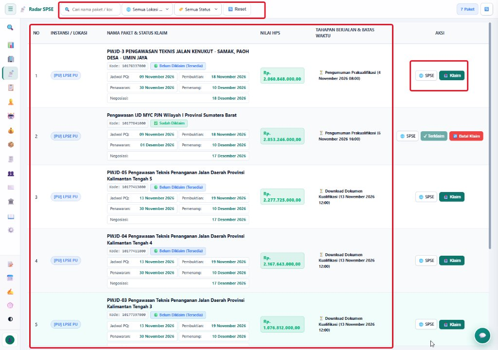
📸 Gambar 4.1: Tampilan Layar Utama Radar SPSE dengan 3 Kotak Penanda Merah (Bilah Filter Atas, Tabel Radar Lelang, dan Kolom Aksi Klaim).
Berdasarkan Gambar 4.1 di atas, layar terbagi menjadi 3 Kotak Penanda Merah Utama yang saling terintegrasi:
| Nama Elemen Filter | Data & Pilihan pada Foto | Fungsi Operasional & Cara Kerja |
|---|---|---|
🔍 Cari nama paket / kode... |
Kotak input teks pencarian cerdas | Memfilter daftar lelang secara seketika berdasarkan kata kunci nama pekerjaan (misal: Pengawasan Jalan) atau 11 digit Kode Tender SPSE (contoh: 10178337000). |
Semua Lokasi ... ˅ |
Dropdown filter wilayah LPSE | Menyaring paket lelang berdasarkan portal LPSE penyelenggara (misal: LPSE Kementerian PU, LPSE Provinsi Sumatera Barat, Balai Wilayah Sungai, dll). |
🏷️ Semua Status ˅ |
Dropdown filter status klaim | Menyaring paket berdasarkan status ketersediaan: Semua Status, Belum Diklaim (Tersedia), atau Sudah Diklaim. |
🔄 Reset |
Tombol pembersih filter | Mengembalikan seluruh parameter pencarian dan filter ke kondisi semula (default) untuk menampilkan seluruh paket. |
Badge 7 Paket |
Pojok kanan atas bilah navigasi | Menampilkan jumlah kumulatif paket lelang aktif yang berhasil dipindai oleh mesin radar pada siklus pemantauan berjalan. |
| Kolom Tabel | Rincian Informasi pada Foto | Fungsi Analisis bagi Tim Estimator |
|---|---|---|
NO & INSTANSI |
• Urutan: 1 s/d 5 • Instansi: [PU] LPSE PU |
Menunjukkan urutan prioritas lelang dan lembaga pengadaan pemerintah (Kementerian Pekerjaan Umum). |
NAMA PAKET & STATUS |
• Paket 1: PWJD-3 Pengawasan Teknis Jalan Kenukut - Samak, Paoh Desa - Umin Jaya (Kode: 10178337000, Status: 🔵 Belum Diklaim (Tersedia))• Paket 2: Pengawasan IJD MYC PJN Wilayah I Provinsi Sumatera Barat (Kode: 10177841000, Status: 🟢 Sudah Diklaim)• Paket 3, 4, 5: PWJD-05, PWJD-04, PWJD-03 Pengawasan Teknis Jalan Daerah Provinsi Kalimantan Tengah (Status: 🔵 Belum Diklaim)
|
• Status Belum Diklaim: Paket baru yang masih terbuka untuk diambil oleh estimator. • Status Sudah Diklaim: Paket yang sudah dikunci oleh staf kantor agar tidak terjadi duplikasi pengerjaan berkas oleh personil lain. |
JADWAL TAHAPAN SPSE |
Setiap baris paket memuat 5 tanggal penting: • Jadwal PQ: 09 November 2026 (Batas upload kualifikasi)• Pembuktian: 18 November 2026 (Verifikasi fisik di Pokja)• Penawaran: 30 November / 01 Desember 2026 (Upload penawaran harga & teknis)• Pemenang: 10 Desember 2026 (Pengumuman pemenang lelang)• Negosiasi: 17 / 18 Desember 2026 (Klarifikasi & negosiasi biaya)
|
Memberikan visibilitas garis waktu (*timeline*) yang lengkap sehingga direksi dan estimator dapat mengantisipasi jadwal penugasan dan ketersediaan tenaga ahli jauh-jauh hari. |
NILAI HPS |
Nilai pagu HPS dalam kotak hijau muda: • Paket 1: Rp. 2.060.848.000,00• Paket 2: Rp. 2.853.246.000,00• Paket 3: Rp. 2.277.725.000,00• Paket 4: Rp. 2.167.643.000,00• Paket 5: Rp. 1.076.812.000,00
|
Menjadi rujukan pagu anggaran tertinggi Pejabat Pembuat Komitmen (PPK). Menjadi dasar pengecekan kecukupan nilai Kemampuan Dasar (KD) perusahaan di Modul 3. |
TAHAPAN BERJALAN & BATAS WAKTU |
Indikator jam pasir (⏳):• ⏳ Pengumuman Prakualifikasi (4 November 2026 08:00) • ⏳ Download Dokumen Kualifikasi (13 November 2026 12:00) |
Menampilkan tahapan lelang yang sedang aktif saat ini persis sesuai server SPSE beserta batas jam penutupannya, mencegah keterlambatan mengunduh dokumen pemilihan. |
| Tombol / Aksi | Tampilan pada Foto | Cara Kerja Otomatisasi Antar Modul |
|---|---|---|
Tombol 🌐 SPSE |
Tombol putih berbingkai biru dengan ikon bola dunia | Pintasan Portal Resmi: Mengklik tombol ini langsung membuka lembar paket tender resmi di portal LPSE Kementerian PU (lpse.pu.go.id) pada tab baru browser tanpa perlu login dan mencari kode tender secara manual. |
Tombol 📥 Klaim |
Tombol hijau toska tua (pada paket belum diklaim) |
Pengambilan Alih Tender: 1. Mengubah status tender menjadi 🟢 Sudah Diklaim.2. Secara otomatis menyalin dan mendaftarkan nama paket, kode lelang, instansi, HPS, dan jadwalnya ke Modul 5 (Data Tender) untuk langsung digarap RAB dan proposal teknisnya! |
Badge ✓ Terklaim & Tombol 🚫 Batal Klaim |
Tampil pada Paket 2 (Pengawasan IJD PJN Sumbar): badge abu-abu dan tombol merah |
• Terklaim: Menandakan paket sedang dalam pengerjaan dokumen. • Batal Klaim: Jika setelah dikaji ternyata kualifikasi tidak memenuhi syarat, klik tombol merah ini untuk mengembalikan paket ke status Belum Diklaim agar dapat dipelajari oleh divisi lain. |
Untuk menjaga efektivitas komunikasi tim dan mencegah spam, sistem menerapkan pemisahan kanal notifikasi lelang secara ketat:
| Kanal Notifikasi | Pemicu & Kriteria Alur | Tujuan & Format Notifikasi |
|---|---|---|
| 🔔 Push Notifikasi Browser (Web Push HP & Desktop) |
Semua Tender Baru Temuan Radar SPSE: Setiap kali mesin crawler/scraper menemukan pengumuman lelang baru di portal LPSE yang sesuai kriteria kata kunci/wilayah. |
Notifikasi Cepat ke Admin & Estimator: Muncul di layar HP / browser laptop staf untuk segera ditinjau di modul Radar Tender. ⚠️ Alasan: Paket yang baru ditemukan belum tentu diikuti, sehingga tidak dikirim ke WhatsApp agar grup tidak banjir pesan. |
| 💬 WhatsApp Group (PT. PA - SUMBAR via Bot Fonnte) |
Hanya Tender yang Resmi DIKLAIM: Dipicu saat staf/estimator menekan tombol 📥 Klaim pada baris paket di modul Radar Tender. |
Pengumuman Resmi ke Seluruh Tim: Mengirim rincian lengkap: Nama Paket, Instansi, Nilai HPS, Batas PQ, Pembuktian, Penawaran, dan Staf Pengklaim. ✅ Alasan: Paket yang diklaim otomatis dipindahkan ke Modul Data Tender dan pasti resmi diikuti oleh konsorsium perusahaan. |
Selain notifikasi klaim tender, bot WhatsApp PT. Putra Aulia Group (Azhar_bot) memantau kotak masuk email resmi tender (domain .go.id, inaproc.id, lpse.*.go.id) dan secara cerdas memblokir email promosi komersial dari vendor swasta (seperti *@tenderid.com, tenderindonesia.com) agar grup tetap bersih hanya untuk pengumuman lelang resmi yang memiliki kekuatan hukum.
2. Estimator mengklik tombol
📥 Klaim. Status paket berubah menjadi 🟢 Sudah Diklaim (seperti pada Paket 2 di Gambar 4.1).3. Sistem otomatis mendaftarkan paket ini ke Modul 5 (Data Tender) dan Modul 6 (Dokumen PQ KSO).
4. Tim langsung menyusun RAB 9 Tab dan Formulir Prakualifikasi KSO sebelum batas waktu
Jadwal PQ: 09 November 2026. Koordinasi cepat ini memungkinkan dokumen penawaran selesai 2 hari lebih awal dari jadwal penutupan SPSE!
Modul 5: Data Tender
Modul Data Tender & Manajemen Persiapan Lelang adalah ruang kerja kolaboratif utama bagi tim estimator, tenaga ahli, dan administrator lelang. Modul ini mengawal seluruh tahapan lelang sejak paket diklaim dari Radar SPSE, pembagian tugas pembuatan dokumen teknis/biaya, verifikasi penugasan personil, pemantauan checklist batas waktu tahapan, hingga penetapan pemenang lelang (SPPBJ).
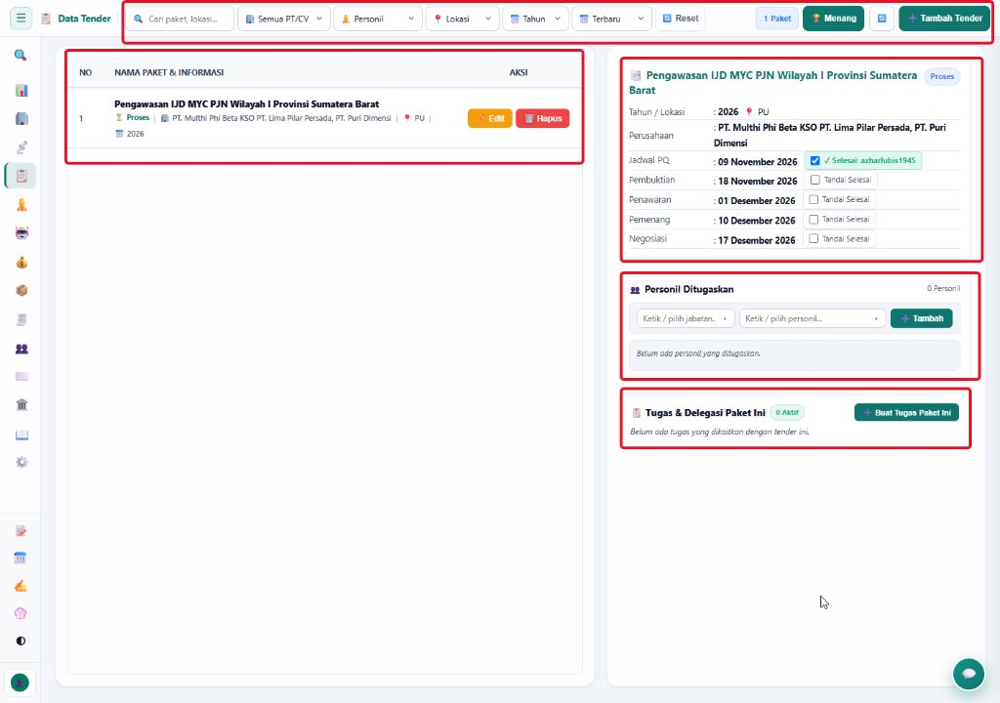
📸 Gambar 5.1: Tampilan Layar Utama Modul Data Tender dengan 5 Kotak Penanda Merah (Bilah Filter, Daftar Paket, Rincian Jadwal, Personil, dan Delegasi Tugas).
Berdasarkan Gambar 5.1 di atas, layar terbagi menjadi 5 Kotak Penanda Merah Utama:
| Nama Elemen Filter | Pilihan & Data pada Foto | Fungsi Operasional & Cara Kerja |
|---|---|---|
🔍 Cari paket, lokasi... |
Kotak input teks pencarian cepat | Memfilter daftar tender secara seketika berdasarkan nama paket atau wilayah pekerjaan dinas. |
Semua PT/CV ˅ |
Dropdown filter badan usaha | Menyaring tender yang diikuti oleh entitas tunggal atau konsorsium KSO tertentu (misal: PT. Multhi Phi Beta KSO PT. Lima Pilar Persada, PT. Puri Dimensi). |
👤 Personil ˅ |
Dropdown filter tenaga ahli | Menyaring tender berdasarkan nama personil yang ditugaskan (contoh: mencari paket mana saja yang mengusulkan Febriyanto, ST). |
📍 Lokasi ˅ & 🗓️ Tahun ˅ |
Dropdown wilayah & tahun | Menyaring berdasarkan instansi (contoh: PU) dan tahun anggaran (contoh: 2026). |
Terbaru ˅ & 🔄 Reset |
Pengurutan & pembersih filter | Mengurutkan berdasarkan tanggal batas upload terdekat serta mengembalikan seluruh filter ke kondisi awal. |
Badge 1 Paket & Tombol 🏆 Menang |
Indikator jumlah & filter status | Menampilkan jumlah tender yang sedang diproses (1 Paket) dan tombol filter cepat untuk melihat tender yang sudah berstatus Menang / SPPBJ. |
Tombol + Tambah Tender |
Tombol hijau toska pojok kanan atas | Membuka modal pendaftaran lelang baru secara manual jika tender tidak diambil melalui Radar SPSE. |
| Elemen Baris | Data Riil pada Foto | Fungsi Analisis bagi Tim Lelang |
|---|---|---|
| Identitas Paket |
Pengawasan IJD MYC PJN Wilayah I Provinsi Sumatera Barat • Status: ⏳ Proses• Konsorsium: 🏢 PT. Multhi Phi Beta KSO PT. Lima Pilar Persada, PT. Puri Dimensi• Instansi & Tahun: 📍 PU | 🗓️ 2026
|
Mengklik baris paket ini langsung menyinkronkan seluruh lembar kerja di sisi kanan (Rincian jadwal SPSE, daftar tenaga ahli, dan delegasi tugas internal). |
| Tombol Aksi |
• ✏️ Edit (Tombol oranye)• 🗑️ Hapus (Tombol merah)
|
• Edit: Membuka modal pengubahan data tender, tanggal tahapan, dan fitur pintar ekstraksi jadwal LPSE otomatis. • Hapus: Menghapus paket tender dari daftar (hanya dapat dilakukan oleh Superuser). |
| Tahapan Lelang | Tanggal SPSE & Status Checklist | Aturan & Tindakan Wajib Staf |
|---|---|---|
| Jadwal PQ (Kualifikasi) | 09 November 2026✔ Selesai: azharlubis1945 |
Telah selesai diunggah dan ditandai selesai oleh user azharlubis1945. Dokumen kualifikasi kemitraan KSO telah terkirim sebelum batas penutupan server. |
| Pembuktian | 18 November 2026Checkbox: ☐ Tandai Selesai |
Jadwal verifikasi fisik berkas legalitas asli dan sertifikat keahlian personil di kantor Pokja Pemilihan. |
| Penawaran | 01 Desember 2026Checkbox: ☐ Tandai Selesai |
Batas akhir unggah berkas penawaran harga (RAB 9 Tab) dan proposal penawaran teknis (AI KAK) ke portal SPSE. |
| Pemenang & Negosiasi | • Pemenang: 10 Desember 2026• Negosiasi: 17 Desember 2026 |
Pengumuman pemenang lelang oleh Pokja dilanjutkan masa sanggah dan rapat klarifikasi/negosiasi teknis dan biaya sebelum penerbitan SPPBJ. |
| Kotak Panel | Elemen Tampilan pada Foto | Fungsi Operasional Sistem |
|---|---|---|
| Kotak 4: Personil Ditugaskan |
• Input Jabatan: Ketik / pilih jabatan... ˅• Input Nama: Ketik / pilih personil... ˅• Tombol: + Tambah• Status: "Belum ada personil yang ditugaskan." |
Menentukan komposisi tim ahli (Site Engineer, Ahli K3, Ahli Jalan) untuk paket ini. Saat ditambahkan, sistem otomatis mengecek apakah ada jadwal bentrok di Modul 12 (Pantau Personil) untuk mencegah temuan audit BPK. |
| Kotak 5: Tugas & Delegasi Paket |
• Status: 0 Aktif• Tombol: + Buat Tugas Paket Ini• Status: "Belum ada tugas yang dikaitkan dengan tender ini." |
Membuka modal pendelegasian tugas pembuatan berkas spesifik kepada staf lelang tertentu lengkap dengan checklist langkah kerja dan tenggat waktu (deadline). |
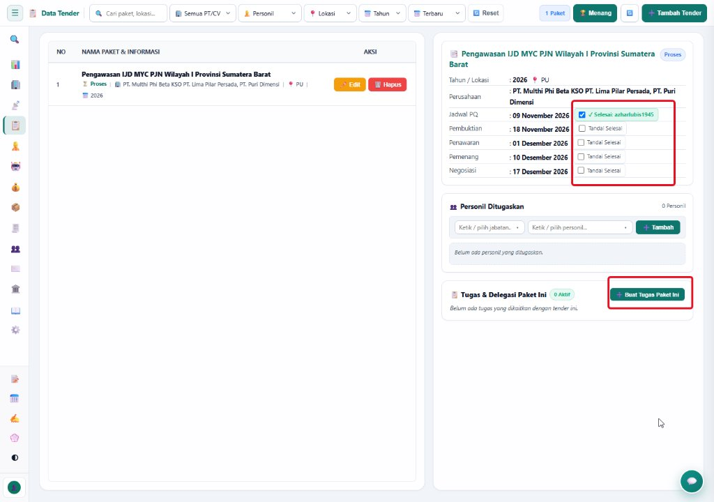
📸 Gambar 5.2: Dua Kotak Penanda Merah Menyorot Checklist Penyelesaian Tahapan SPSE dan Tombol Pendelegasian Tugas Paket.
Berdasarkan Gambar 5.2, dua area yang disorot memiliki peran koordinasi kerja tim lelang:
-
Kotak Merah Atas (Checklist Otomatis Akuntabilitas Kerja):
Setiap kali suatu tahapan lelang selesai diunggah ke SPSE, staf cukup mencentang kotak
☐ Tandai Selesai. Sistem otomatis merekam username staf dan stempel waktu selesai (contoh pada foto:✔ Selesai: azharlubis1945pada Jadwal PQ). Hal ini memberikan kepastian kepada pimpinan bahwa berkas telah sukses terunggah tanpa perlu konfirmasi manual berulang kali. -
Kotak Merah Bawah (Tombol
+ Buat Tugas Paket Ini): Tombol hijau toska tua untuk membuat penugasan kerja spesifik yang terikat langsung dengan tender ini, memunculkan modal pembuatan tugas baru (Gambar 5.3).
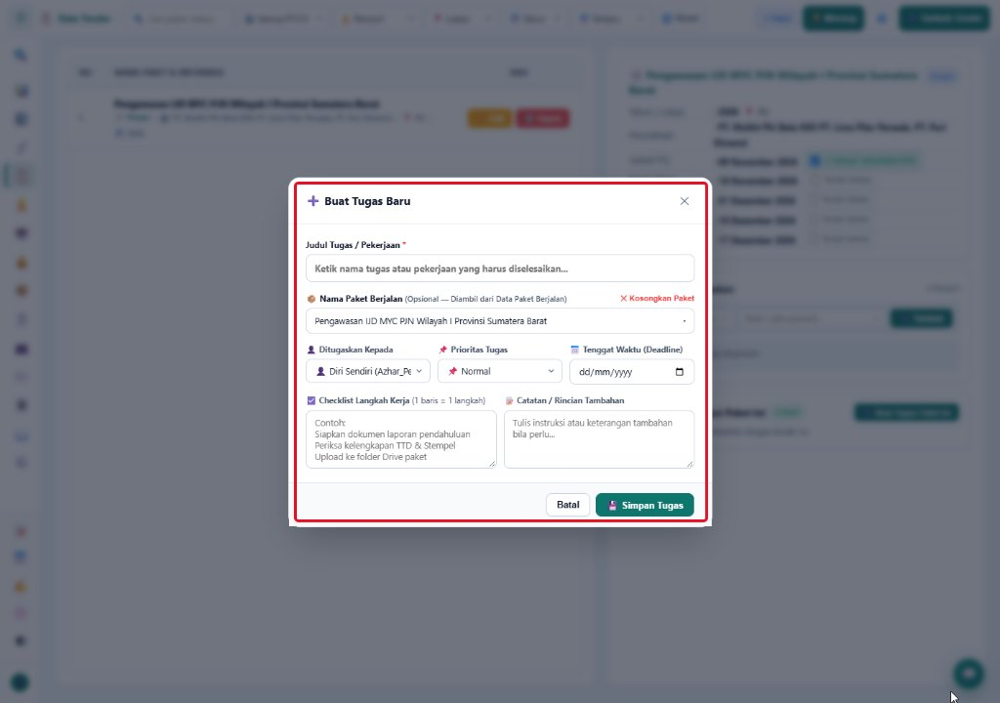
📸 Gambar 5.3: Modal Pembuatan Tugas Baru Lengkap dengan Checklist Langkah Kerja dan Penetapan Deadline.
Setiap tugas yang dibuat melalui modal pada Gambar 5.3 akan langsung muncul pada menu mengambang (FAB 💬) di pojok kanan bawah staf yang ditugaskan:
| Kolom Formulir Tugas | Pengisian Riil pada Foto | Dampak Kolaborasi Tim |
|---|---|---|
| Judul Tugas / Pekerjaan * | Placeholder: "Ketik nama tugas atau pekerjaan yang harus diselesaikan..." | Wajib Isi (*): Memberikan instruksi singkat dan padat (contoh: "Susun Proposal Teknis & Metodologi KAK Jalan"). |
| Nama Paket Berjalan | Terkunci otomatis: Pengawasan IJD MYC PJN Wilayah I Provinsi Sumatera Barat |
Mengikat tugas ini langsung ke paket tender bersangkutan sehingga riwayat penugasan tersimpan rapi pada rekam jejak tender. |
| Ditugaskan Kepada | Dropdown: Diri Sendiri (Azhar_Pe... ˅) |
Memilih staf pelaksana (koordinator estimator, admin tender, atau drafter) yang bertanggung jawab menyelesaikan berkas. |
| Prioritas & Deadline | • Prioritas: ★ Normal ˅ (bisa dipilih Tinggi atau Darurat)• Deadline: Tanggal kalender dd/mm/yyyy |
Tugas dengan prioritas tinggi dan deadline mendekati penutupan SPSE akan memunculkan lencana peringatan merah pada panel tugas staf. |
| Checklist Langkah Kerja | Format 1 baris = 1 langkah: "Siapkan dokumen laporan pendahuluan Periksa kelengkapan TTD & Stempel Upload ke folder Drive paket" |
Memberikan daftar periksa (*checklist*) yang dapat dicentang satu per satu oleh staf saat pekerjaan berlangsung hingga mencapai 100%. |
Tombol 💾 Simpan Tugas |
Tombol hijau emerald di pojok kanan bawah modal | Mengirim tugas ke database dan meneruskan notifikasi tugas aktif ke dashboard staf bersangkutan. |
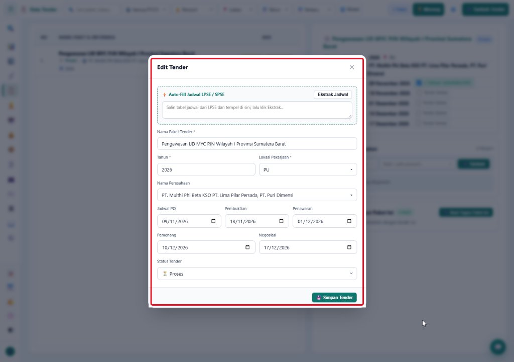
📸 Gambar 5.4: Modal Edit Tender dengan Fitur Cerdas Auto-Fill Jadwal LPSE/SPSE dan Form Pengaturan Paket.
Fitur paling revolusioner pada Gambar 5.4 adalah kotak cerdas Auto-Fill Jadwal LPSE / SPSE:
| Bagian Formulir | Pengisian Riil pada Foto | Keunggulan Otomatisasi Sistem |
|---|---|---|
| ⚡ Auto-Fill Jadwal LPSE / SPSE | Area tempel teks: "Salin tabel jadwal dari LPSE dan tempel di sini, lalu klik Ekstrak..." beserta tombol Ekstrak Jadwal |
Bebas Ketik Tanggal Manual: Cukup buka website LPSE, blok tabel tahapan lelang dengan mouse (Ctrl+C), tempel di kotak ini, lalu klik Ekstrak Jadwal. Sistem kecerdasan parser otomatis mengisi kolom tanggal PQ, Pembuktian, Penawaran, Pemenang, dan Negosiasi secara presisi 100%! |
| Nama Paket Tender * | Pengawasan IJD MYC PJN Wilayah I Provinsi Sumatera Barat |
Nama resmi paket lelang sesuai dokumen pengadaan. |
| Tahun & Lokasi * | • Tahun: 2026• Lokasi: PU |
Mengelompokkan tender ke tahun anggaran berjalan dan instansi penyelenggara. |
| Nama Perusahaan Pelaksana | Dropdown: PT. Multhi Phi Beta KSO PT. Lima Pilar Persada, PT. Puri Dimensi |
Memilih apakah tender diikuti oleh badan usaha induk secara mandiri atau melalui konsorsium KSO. |
| Kolom Tanggal Jadwal |
• Jadwal PQ: 09/11/2026• Pembuktian: 18/11/2026• Penawaran: 01/12/2026• Pemenang: 10/12/2026• Negosiasi: 17/12/2026
|
Tanggal-tanggal ini yang akan dipantau oleh radar hitung mundur (countdown) di Beranda dan diteruskan ke bot pengingat WhatsApp. |
| Status Tender | Dropdown: ⏳ Proses (pilihan: Proses, Menang, Kalah, Batal) |
Jika status diubah menjadi Menang, paket ini secara otomatis diteruskan ke Modul 10 (Paket Berjalan) untuk diterbitkan SPMK dan penagihan termin MC! |
Tombol 💾 Simpan Tender |
Tombol hijau emerald di bagian bawah modal | Mengunci seluruh pembaruan ke database cloud Supabase. |
Gunakan fitur Auto-Fill Jadwal LPSE setiap kali ada pengumuman addendum perubahan jadwal dari Pokja UKPBJ. Dalam waktu 5 detik setelah menyalin tabel dari SPSE, seluruh jadwal pembuktian dan batas upload penawaran langsung terbarui serentak di seluruh aplikasi dan notifikasi WhatsApp kantor!
Modul 6: PQ Anggota KSO
Modul PQ Anggota KSO (Prakualifikasi & Konsorsium) adalah instrumen spesialis yang dirancang khusus untuk memfasilitasi penyusunan dokumen kemitraan Kerja Sama Operasi (KSO) sesuai standar Permen PUPR No. 14/PRT/M/2020 dan Pedoman Dokumen Pemilihan SPSE LKPP v4.5. Modul ini menyelaraskan pembagian porsi saham/modal, penetapan Lead Firm (perusahaan utama), tanggung jawab renteng, hingga pencetakan otomatis lembar Perjanjian KSO, Surat Kuasa KSO, dan Pakta Integritas berkode barcode resmi.
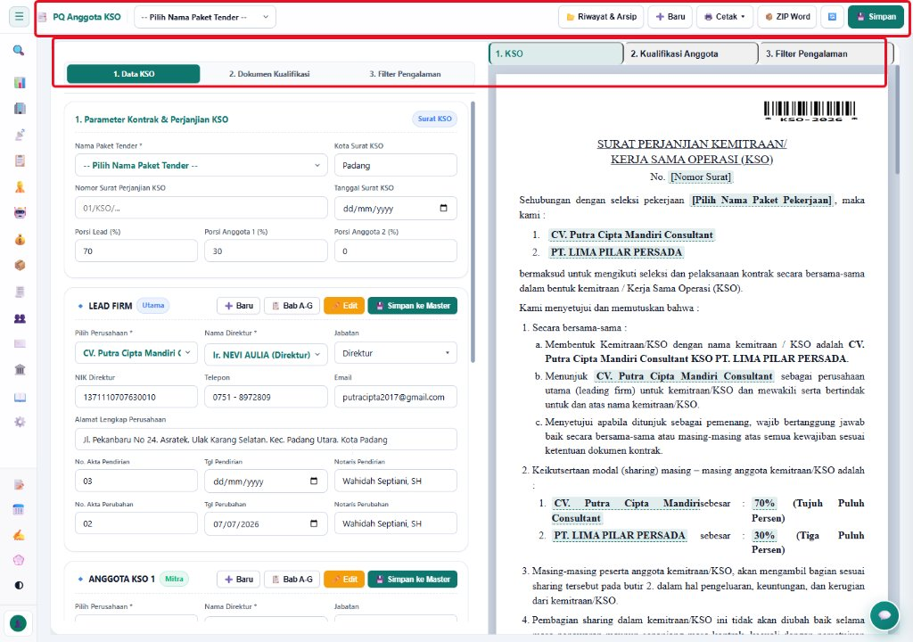
📸 Gambar 6.1: Tampilan Bilah Atas Universal Toolbar dan Stepper 3 Tab Ganda dengan 2 Kotak Penanda Merah.
Berdasarkan Gambar 6.1 di atas, bagian atas modul terbagi menjadi 2 Kotak Penanda Merah:
| Nama Elemen / Tombol | Tampilan pada Foto | Fungsi Operasional & Cara Kerja |
|---|---|---|
📑 PQ Anggota KSO |
Label judul modul di pojok kiri atas | Identitas resmi modul penyusunan dokumen Prakualifikasi dan Kemitraan KSO. |
-- Pilih Nama Paket Tender -- ⌄ |
Dropdown filter tender aktif | Memilih paket lelang yang sedang diikuti (terhubung langsung dengan data tender yang telah diklaim dari Modul 5 Data Tender). |
Tombol 📁 Riwayat & Arsip |
Tombol putih berbingkai emas | Membuka arsip draf perjanjian KSO masa lalu yang pernah dibuat untuk proyek-proyek sebelumnya agar dapat di-kloning tanpa ketik ulang. |
Tombol + Baru |
Tombol putih dengan ikon tambah | Mengosongkan form dan memulai penyusunan kemitraan KSO baru dari awal. |
Tombol 🖨️ Cetak ⌄ |
Tombol dropdown cetak | Membuka jendela modal pilihan cetak resmi (Cetak 3 Lembar Lengkap, Surat Perjanjian KSO, Surat Kuasa, atau Pakta Integritas). |
Tombol 📦 ZIP Word |
Tombol putih berbingkai coklat | Mengekspor seluruh berkas dokumen kualifikasi KSO dan formulir Bab A-G ke dalam arsip format ZIP berisi file Microsoft Word (.docx editable) untuk kebutuhan tanda tangan basah / materai fisik. |
Tombol 💾 Simpan |
Tombol hijau toska tua di pojok kanan atas | Menyimpan seluruh konfigurasi konsorsium, nomor perjanjian, persentase modal, dan data direksi ke database cloud Supabase. |
| Nama Tab | Sisi Formulir Kiri (Input) | Sisi Lembar Kanan (Live Preview) |
|---|---|---|
| Tab 1: Data KSO (Aktif pada foto) |
Formulir parameter kontrak KSO, nomor surat, tanggal, kota, sharing modal (70% - 30%), data Lead Firm, dan Anggota Mitra 1 & 2. | Menampilkan live preview fisik Surat Perjanjian Kemitraan (KSO) lengkap dengan Barcode resmi lelang, klausul tanggung renteng, dan tabel keikutsertaan modal. |
| Tab 2: Dokumen Kualifikasi | Penyusunan Surat Kuasa KSO penunjukan pimpinan utama dan naskah Pakta Integritas Kemitraan bersama. | Menampilkan preview lembar Surat Kuasa KSO dan Pakta Integritas siap cetak / ekspor. |
| Tab 3: Filter Pengalaman | Penggabungan rekam jejak BAST portofolio sejenis dari Lead Firm dan Anggota KSO. | Kalkulasi otomatis pemenuhan ambang batas Nilai Kemampuan Dasar (KD) konsorsium sesuai syarat tender SPSE. |
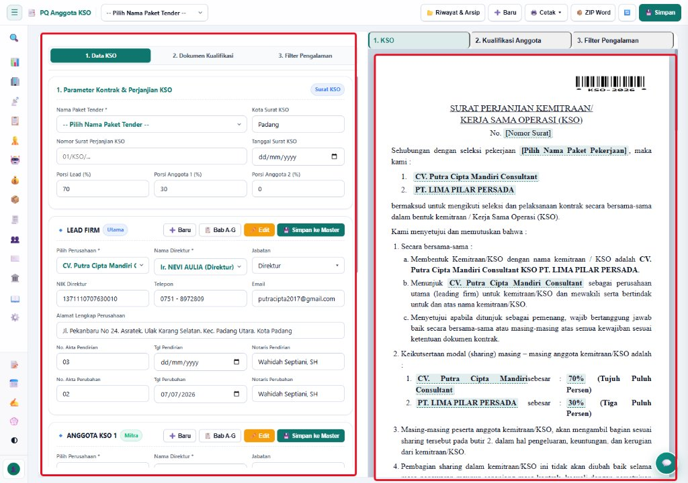
📸 Gambar 6.2: Layar Terbelah Dua (Split-Screen) — Kotak Kiri (Formulir Input Data) dan Kotak Kanan (Live Document Realtime Preview Ber-Barcode).
Berdasarkan Gambar 6.2 di atas, layar dirancang dengan konsep kerja berdampingan (*Dual-Pane Live Sync*):
| Zona Layar | Komponen yang Tampil pada Foto | Mekanisme & Keunggulan Kerja |
|---|---|---|
| Kotak Merah Kiri (Formulir Input Dinamis) |
• Tab Stepper Navigasi. • Kartu 1: Parameter Kontrak & Perjanjian KSO. • Kartu 2: Lead Firm (CV. Putra Cipta Mandiri Consultant). • Kartu 3: Anggota KSO 1 (PT. LIMA PILAR PERSADA). |
Input Sekali, Otomatis Terhubung: Staf memasukkan data direksi, akta pendirian/perubahan, nomor perjanjian, dan persentase sharing modal. Validasi sistem memastikan seluruh data legalitas terisi lengkap. |
| Kotak Merah Kanan (Live Preview Dokumen Ber-Barcode) |
• Barcode Resmi Sistem: ||| | ||||| | ||| KSO - 2026.• Judul: SURAT PERJANJIAN KEMITRAAN / KERJA SAMA OPERASI (KSO). • Pihak 1: CV. Putra Cipta Mandiri Consultant. • Pihak 2: PT. LIMA PILAR PERSADA. • Pasal 1 (Nama KSO & Lead Firm), Pasal 2 (Modal 70% : 30%), Pasal 3 & 4 (Tanggung Renteng). |
Render Instan 0 Milidetik (WYSIWYG): Setiap huruf atau angka persentase modal yang diketik di panel kiri langsung tercermin ke lembar preview A4 di sebelah kanan secara realtime tanpa perlu menekan tombol refresh. Lembar ini identik dengan hasil cetak akhir. |
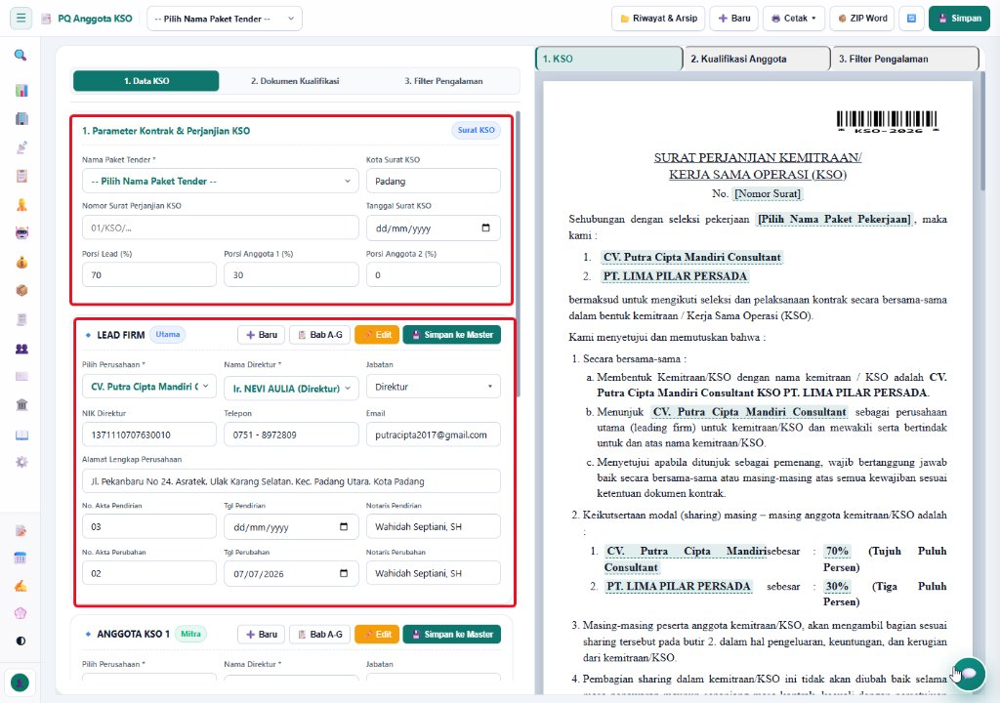
📸 Gambar 6.3: Rincian Kotak Atas (Parameter Kontrak KSO) dan Kotak Bawah (Formulir Legalitas Lengkap Lead Firm).
Berdasarkan Gambar 6.3 di atas, terdapat 2 blok input krusial:
| Nama Kolom Input | Nilai pada Foto | Penjelasan Teknis Permen PUPR |
|---|---|---|
Nama Paket Tender * |
Dropdown pilihan tender | Nama paket lelang yang akan dicantumkan secara otomatis pada konsiderans pembuka surat perjanjian kemitraan. |
Kota Surat KSO |
Padang |
Kota domisili hukum penandatanganan akta perjanjian kemitraan KSO. |
Nomor Surat Perjanjian KSO |
01/KSO/... |
Nomor registrasi internal surat perjanjian KSO yang disepakati bersama oleh seluruh pimpinan badan usaha. |
Tanggal Surat KSO |
dd/mm/yyyy 📅 |
Tanggal resmi penandatanganan surat perjanjian (wajib bertanggal sebelum batas akhir pemasukan dokumen kualifikasi SPSE). |
Porsi Lead (%) |
70 % |
Persentase modal Lead Firm. Sesuai Permen PUPR, Lead Firm wajib memiliki porsi saham/keikutsertaan terbesar (minimal > 50% atau porsi mayoritas). |
Porsi Anggota 1 (%) |
30 % |
Persentase keikutsertaan modal Anggota KSO 1 (Mitra). |
Porsi Anggota 2 (%) |
0 % |
Persentase Anggota KSO 2 (jika konsorsium terdiri dari 3 perusahaan). Total porsi (Lead + Anggota 1 + Anggota 2) wajib tepat bernilai 100%. |
| Nama Elemen & Tombol | Data pada Foto | Fungsi Otomatisasi & Validasi |
|---|---|---|
| Header & Badge | • LEAD FIRM Utama |
Menandai badan usaha ini sebagai pemimpin kemitraan yang bertindak mewakili KSO di hadapan Pokja Pemilihan SPSE. |
| Bilah Tombol Aksi Cepat |
+ Baru | 📄 Bab A-G | ✏️ Edit | 💾 Simpan ke Master
|
• + Baru: Memasukkan data entitas luar. • Bab A-G: Membuka seluruh isian kualifikasi SPSE (Izin Usaha, Akta, Pajak, Pengurus). • Simpan ke Master: Menyimpan pembaruan data akta langsung ke Modul Data Perusahaan. |
Pilih Perusahaan * |
CV. Putra Cipta Mandiri Consultant ⌄ |
Memilih badan usaha dari master data perusahaan. Seluruh data legalitas di bawahnya otomatis terisi (*auto-fill*). |
Nama Direktur * & Jabatan |
Ir. NEVI AULIA (Direktur) | Jabatan: Direktur |
Nama pimpinan berwenang bertandatangan sesuai akta notaris yang masih berlaku. |
| NIK, Telepon, Email | NIK: 1371110707630010Telp: 0751 - 8972809Email: putracipta2017@gmail.com |
Identitas verifikasi pejabat penanggung jawab badan usaha. |
| Alamat Perusahaan | Jl. Pekanbaru No 24. Asratek. Ulak Karang Selatan. Kec. Padang Utara. Kota Padang |
Alamat domisili kantor resmi sesuai Nomor Induk Berusaha (NIB). |
| Akta Pendirian | No: 03 | Notaris: Wahidah Septiani, SH |
Landasan hukum pendirian awal badan usaha. |
| Akta Perubahan Terakhir | No: 02 | Tgl: 07/07/2026 | Notaris: Wahidah Septiani, SH |
Bukti akta perubahan anggaran dasar/susunan pengurus terbaru. |
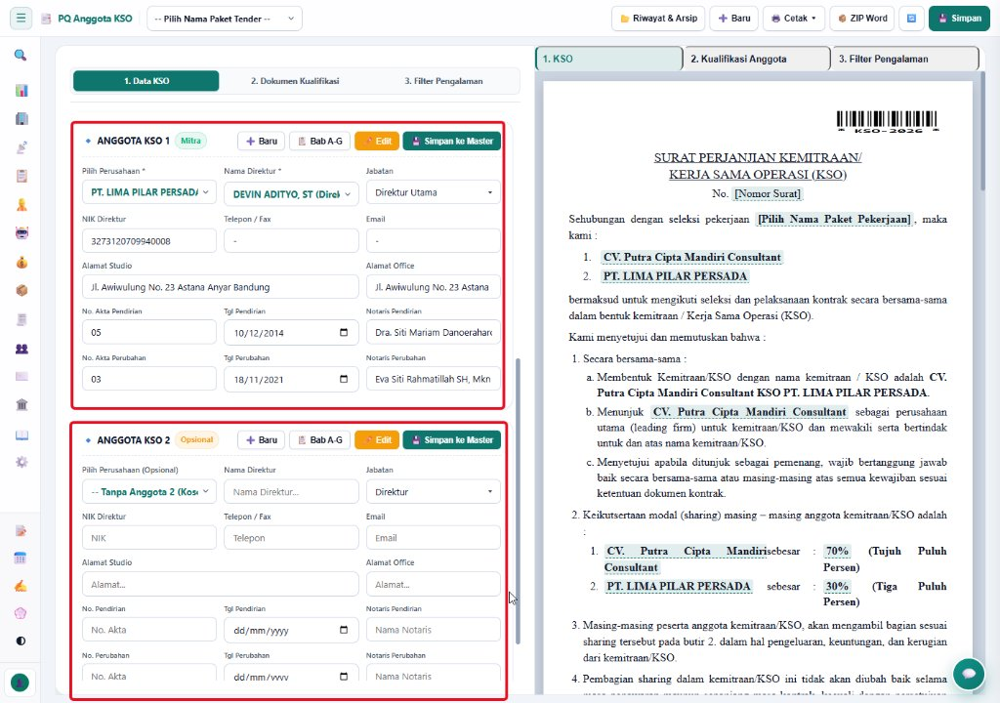
📸 Gambar 6.4: Rincian Kotak Atas (Anggota KSO 1 - Mitra PT. LIMA PILAR PERSADA) dan Kotak Bawah (Anggota KSO 2 - Opsional).
Berdasarkan Gambar 6.4 di atas, terdapat 2 blok konfigurasi mitra kemitraan:
| Nama Kolom | Data pada Foto | Penjelasan Operasional |
|---|---|---|
| Header & Status | • ANGGOTA KSO 1 Mitra |
Badan usaha mitra yang bersekutu dengan Lead Firm dalam pengerjaan paket lelang. |
Pilih Perusahaan * |
PT. LIMA PILAR PERSADA ⌄ |
Badan usaha anggota konsorsium pemegang porsi modal 30%. |
| Pimpinan & NIK | DEVIN ADITYO, ST (Direktur)Jabatan: Direktur UtamaNIK: 3273120709940008 |
Pimpinan mitra yang memberikan kuasa dan menandatangani perjanjian kemitraan KSO secara bersama-sama. |
| Alamat Studio & Office | Jl. Awiwulung No. 23 Astana Anyar Bandung |
Domisili operasional kantor rekanan mitra KSO. |
| Akta Pendirian | No: 05 | Tgl: 10/12/2014Notaris: Dra. Siti Mariam Danoerahardja, SH |
Legalitas notariat pendirian perseroan mitra. |
| Akta Perubahan | No: 03 | Tgl: 18/11/2021Notaris: Eva Siti Rahmatillah SH, MKn |
Landasan hukum perubahan anggaran dasar perseroan mitra terakhir. |
| Karakteristik Fitur | Pengaturan pada Foto | Logika Sistem Dokumen KSO |
|---|---|---|
| Header & Sifat | • ANGGOTA KSO 2 Opsional |
Disediakan khusus untuk paket proyek skala besar (> Rp 15 Milyar) yang melibatkan konsorsium 3 badan usaha. |
| Status Pemilihan | -- Tanpa Anggota 2 (Kosongkan) -- ⌄ |
Jika lelang hanya terdiri dari 2 badan usaha (Lead + Mitra 1), pilih opsi ini. Sistem secara cerdas akan menyusun format naskah perjanjian hukum KSO khusus untuk 2 pihak tanpa menyisakan baris kosong (*clean legal layout*). |
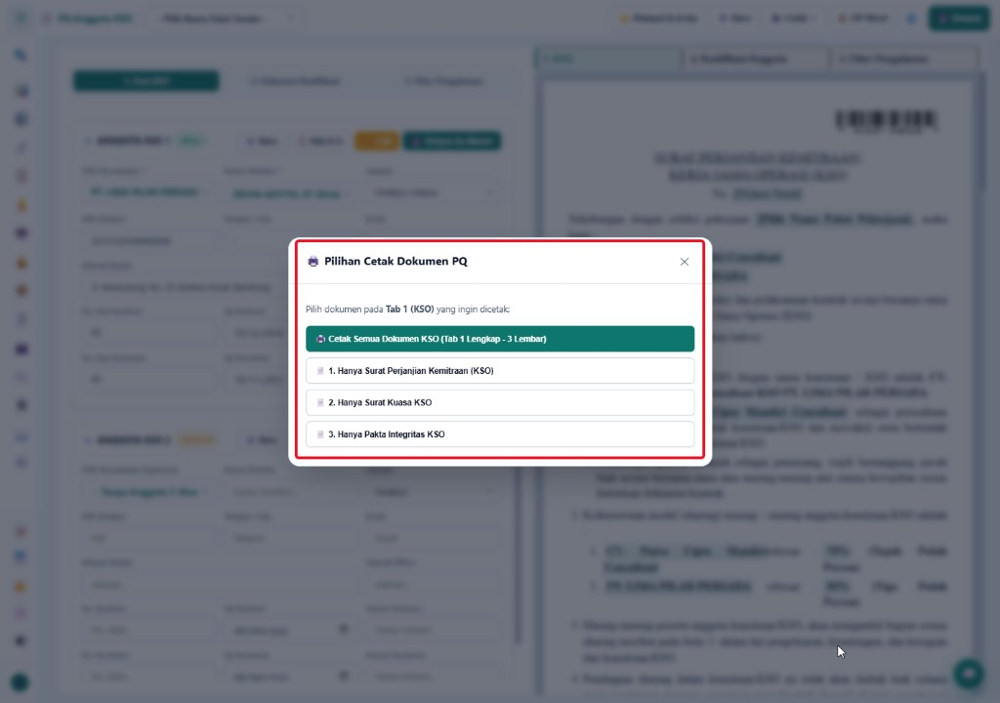
📸 Gambar 6.5: Dialog Pop-Up "Pilihan Cetak Dokumen PQ" dengan Kotak Penanda Merah Mengelilingi 4 Opsi Cetak Dokumen Resmi.
Berdasarkan Gambar 6.5 di atas, saat tombol 🖨️ Cetak ⌄ diklik, sistem memunculkan 4 Opsi Cetak Dokumen KSO:
| Pilihan Dokumen Cetak | Bentuk Tombol & Warna | Muatan Berkas & Ketentuan Hukum SPSE |
|---|---|---|
🖨️ Cetak Semua Dokumen KSO |
Tombol hijau toska tua penuh (tombol rekomendasi utama) |
Pencetakan Berkas Bundel Lengkap (3 Halaman): Mencetak sekaligus: (1) Surat Perjanjian Kemitraan KSO, (2) Surat Kuasa Kemitraan KSO, dan (3) Pakta Integritas Kemitraan KSO dalam satu file dokumen PDF siap upload SPSE. |
📄 1. Hanya Surat Perjanjian Kemitraan (KSO) |
Kartu tombol putih (opsi mandiri 1) | Mencetak lembar utama akta perjanjian KSO yang memuat persentase keikutsertaan modal (70% - 30%), penunjukan Leading Firm, hak/kewajiban tanggung renteng, dan kolom tanda tangan bersama bermaterai. |
📄 2. Hanya Surat Kuasa KSO |
Kartu tombol putih (opsi mandiri 2) | Mencetak surat kuasa penunjukan resmi dari seluruh direksi anggota mitra kepada Lead Firm untuk menandatangani surat penawaran, menghadiri pembuktian kualifikasi, dan menandatangani kontrak SPPBJ atas nama KSO. |
📄 3. Hanya Pakta Integritas KSO |
Kartu tombol putih (opsi mandiri 3) | Mencetak naskah komitmen anti korupsi, kolusi, dan nepotisme (KKN) standar LKPP yang ditandatangani oleh seluruh pimpinan badan usaha anggota kemitraan. |
2. Mengatur persentase modal: CV. Putra Cipta Mandiri Consultant (70% - Lead Firm) dan PT. LIMA PILAR PERSADA (30% - Mitra).
3. Sistem secara otomatis menghasilkan barcode lelang
KSO-2026 dan menyusun lembar draf surat perjanjian di panel kanan.4. Klik
🖨️ Cetak -> Cetak Semua Dokumen KSO (Tab 1 Lengkap - 3 Lembar) atau klik 📦 ZIP Word untuk dikirimkan kepada direktur mitra guna pembubuhan e-meterai resmi sebelum batas waktu Jadwal PQ: 09 November 2026!
Modul 7: Data Personil
Modul Data Personil & Generator CV Standar Tender adalah pusat pengelolaan aset sumber daya manusia (SDM) dan tenaga ahli perusahaan. Modul ini mengawal seluruh siklus kesiapan personil: mulai dari pencatatan identitas KTP/NPWP, sertifikasi keahlian SKK/SKA LPJK, ekstraksi otomatis berkas melalui kecerdasan buatan (AI OCR), audit masa kerja pengalaman (Tab Master Pengalaman), penyaringan rekam jejak sesuai Kerangka Acuan Kerja (Tab Filter KAK), hingga penerbitan dokumen Curriculum Vitae resmi berstandar Permen PUPR No. 14/PRT/M/2020 dan INKINDO.
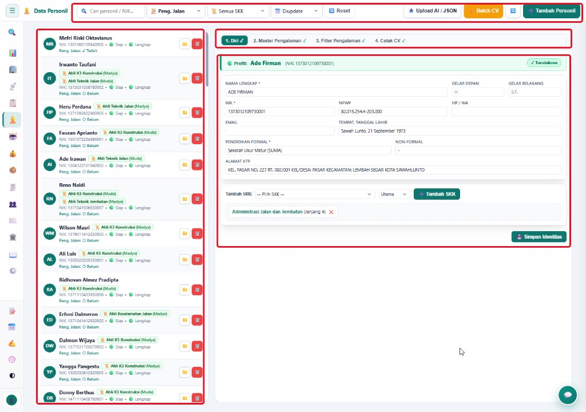
📸 Gambar 7.1: Tampilan Layar Utama Modul Data Personil dengan 4 Kotak Penanda Merah (Bilah Filter Atas, Daftar Tenaga Ahli Kiri, Stepper 4 Tab Kanan Atas, dan Tab 1 Profil Diri Kanan Bawah).
Berdasarkan Gambar 7.1 di atas, layar utama terbagi menjadi 4 Kotak Penanda Merah Utama:
| Nama Elemen / Tombol | Pilihan & Nilai pada Foto | Fungsi Operasional & Cara Kerja |
|---|---|---|
🔍 Cari personil / NIK... |
Kotak input teks pencarian cepat | Mencari data personil secara instan berdasarkan nama lengkap atau 16 digit NIK KTP. |
📜 Peng. Jalan ⌄ |
Dropdown filter bidang pekerjaan | Memilih bidang keahlian tender yang sedang digarap (misal: Pengawasan Jalan, Perencanaan Jembatan, Gedung, atau SDA). |
Semua SKK ⌄ |
Dropdown filter klasifikasi SKK | Menyaring personil berdasarkan kepemilikan sertifikat SKK LPJK (misal: Ahli K3 Konstruksi, Ahli Teknik Jalan, Ahli Jembatan). |
📅 Diupdate ⌄ & 🔄 Reset |
Dropdown sortir & tombol pembersih | Mengurutkan daftar personil berdasarkan pembaruan data terakhir atau abjad (A-Z), serta tombol Reset untuk mengembalikan filter ke kondisi default. |
Tombol 📤 Upload AI / JSON |
Tombol putih berbingkai | Fitur impor massal data personil menggunakan file JSON atau ekstraksi berkas multi-format. |
Tombol 📑 Batch CV |
Tombol oranye emas menyala | Fitur Unggulan Multi-CV: Menerbitkan dokumen CV resmi untuk seluruh susunan tim usulan tender sekaligus dalam 1 klik tanpa harus membuka personil satu per satu! |
Tombol + Tambah Personil |
Tombol hijau toska tua di pojok kanan | Membuka modal pendaftaran tenaga ahli baru (dilengkapi fitur Ekstraksi AI otomatis). |
| Komponen Kartu Personil | Contoh Tampilan pada Foto | Arti Status & Indikator Kesiapan |
|---|---|---|
| Avatar Inisial & Nama | Lingkaran toska (MR, IT, HP, dll) + Nama Lengkap |
Identitas visual cepat personil (Mefri Riski, Irwanto Taufani, Heru Perdana, Fauzan Aprianto, Ade Irawan, Reno Naldi, Wilson Masri, dll). |
| Lencana SKK LPJK |
Ahli K3 Konstruksi (Madya) Ahli Teknik Jalan (Muda) |
Menampilkan sertifikat keahlian resmi yang terdaftar dan diakui LPJK Kementerian PUPR beserta jenjang kualifikasinya (Muda, Madya, Utama). |
Indikator ● Siap ● Lengkap |
Titik hijau dengan teks status | Menandakan dokumen identitas KTP, NPWP, ijazah, dan SKK personil telah lengkap dan valid untuk digunakan maju lelang. |
| Status CV Bidang | Peng. Jalan: ✓ Terbit / O Belum |
Memantau apakah personil telah memiliki CV resmi yang siap dilampirkan pada penawaran tender bidang bersangkutan. |
| Tombol Aksi Cepat | Ikon Folder Kuning (📁) & Tong Sampah Merah (🗑️) | Tombol kuning untuk membuka rekam jejak personil, dan tombol merah untuk menghapus personil dari database. |
| Tahapan Tab | Nama & Status pada Foto | Fokus Kerja & Output Dokumen |
|---|---|---|
| Tab 1 | 1. Diri ✓ (Aktif) |
Pencatatan profil identitas pribadi, gelar, ijazah pendidikan formal, alamat KTP, dan sertifikat SKK aktif. |
| Tab 2 | 2. Master Pengalaman ✓ |
Pengelolaan seluruh basis data riwayat proyek dan referensi masa kerja personil sepanjang kariernya. |
| Tab 3 | 3. Filter Pengalaman ✓ |
Penyaringan riwayat proyek sesuai syarat Kerangka Acuan Kerja (KAK) tender dan verifikasi ambang batas masa kerja. |
| Tab 4 | 4. Cetak CV ✓ |
Pengisian parameter penugasan tender dan penerbitan Curriculum Vitae resmi berstandar Permen PUPR / INKINDO. |
| Nama Kolom Form | Nilai Data pada Foto | Keterangan & Validasi Sistem |
|---|---|---|
| Header Profil | ● Profil: Ade Firman (NIK: 1373012109730001) |
Dilengkapi lencana hijau ✓ Tersinkron yang menjamin data terhubung realtime ke database pusat. |
| Nama Lengkap & Gelar | Nama: ADE FIRMANGelar Depan: Ir. | Belakang: S.T. |
Penulisan gelar akademik yang akan dicantumkan secara formal pada lembar penawaran tenaga ahli. |
| NIK & NPWP | NIK: 1373012109730001NPWP: 82.015.254.4-203.000 |
Nomor identitas kependudukan dan perpajakan resmi untuk verifikasi SPSE. |
| Tempat, Tgl Lahir | Sawah Lunto, 21 September 1973 |
Data kelahiran untuk perhitungan batas usia maksimal tenaga ahli sesuai syarat KAK lelang. |
| Pendidikan Formal | Sekolah Ukur Matur (SUMA) |
Asal institusi pendidikan dan jurusan ijazah yang diakui. |
| Alamat KTP | KEL. PASAR NO. 227 RT. 002/001 KEL/DESA: PASAR KECAMATAN: LEMBAH SEGAR KOTA SAWAHLUNTO |
Alamat domisili sah sesuai KTP elektronik. |
| Manajemen SKK | Tag: Administrasi Jalan dan Jembatan (Jenjang 4) ✕ |
Dapat menambahkan beberapa SKK sekaligus melalui dropdown Tambah SKK dan tombol + Tambah SKK. |
| Tombol Aksi | 💾 Simpan Identitas |
Menyimpan seluruh perubahan identitas personil ke database server. |
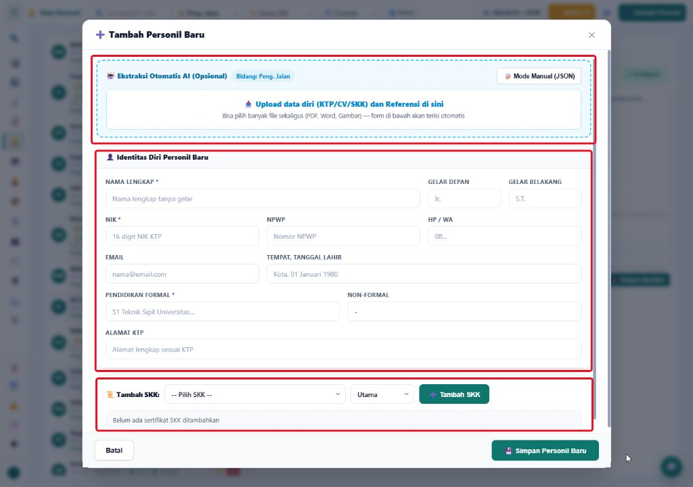
📸 Gambar 7.2: Jendela Dialog "+ Tambah Personil Baru" dengan 3 Kotak Penanda Merah (Zona Ekstraksi AI, Form Identitas Diri, dan Sertifikat SKK).
Berdasarkan Gambar 7.2 di atas, modal penambahan personil dilengkapi teknologi cerdas yang terbagi menjadi 3 Kotak Penanda Merah:
| Zona Kotak Penanda | Fitur & Elemen pada Foto | Keunggulan & Alur Kerja Otomatisasi |
|---|---|---|
| Kotak Merah Atas (Ekstraksi Otomatis AI) |
• Label: 🤖 Ekstraksi Otomatis AI (Opsional)• Bidang: Peng. Jalan• Tombol: 📑 Mode Manual (JSON)• Kotak Unggah: Upload data diri (KTP/CV/SKK) dan Referensi di sini |
Revolusi Input 0 Ketik Manual: Staf cukup men-drop file dokumen (PDF CV lama, scan KTP, scan ijazah, atau sertifikat SKK). Mesin AI Vision secara instan membaca teks dokumen, mengekstrak NIK, nama, tanggal lahir, riwayat pendidikan, dan pengalaman kerja, lalu **secara otomatis mengisi seluruh kolom formulir di bawahnya** dalam 3 detik! |
| Kotak Merah Tengah (Identitas Diri Personil) |
Form isian lengkap: Nama Lengkap (tanpa gelar), Gelar Depan, Gelar Belakang, NIK 16 digit, NPWP, HP/WA, Email, Tempat/Tanggal Lahir, Pendidikan Formal & Non-Formal, serta Alamat KTP. |
Pengecekan Duplikasi Otomatis: Sistem langsung memvalidasi nomor NIK di database untuk mencegah pendaftaran personil ganda (*anti-duplicate check*). |
| Kotak Merah Bawah (Sertifikat SKK & Simpan) |
• Dropdown Tambah SKK: -- Pilih SKK --• Dropdown Utama ⌄• Tombol + Tambah SKK• Tombol Batal & 💾 Simpan Personil Baru
|
Penyimpanan Instan: Menautkan klasifikasi SKK awal dan langsung menyimpan personil ke daftar aktif sehingga segera muncul pada panel kiri. |
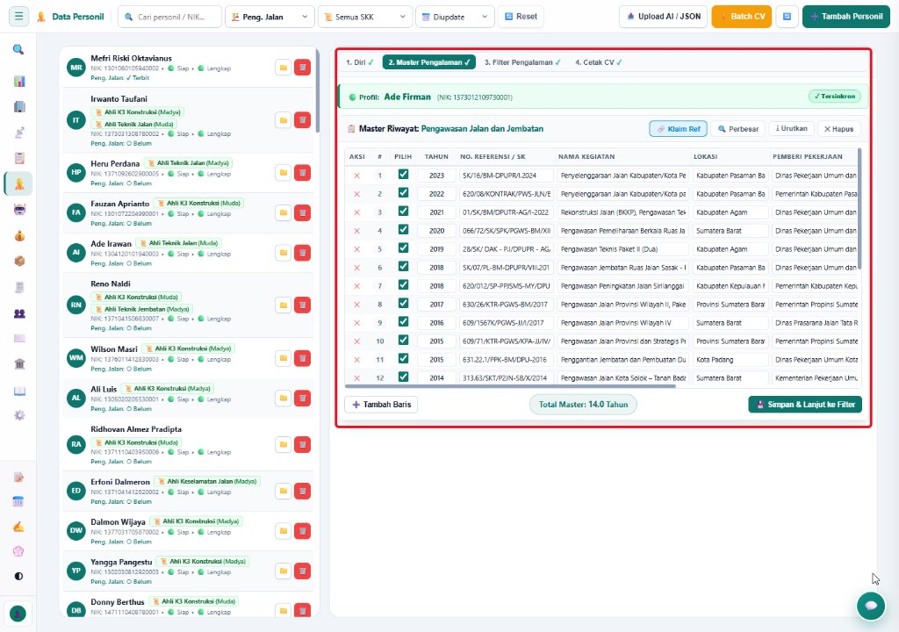
📸 Gambar 7.3: Tampilan Tab 2 (Master Pengalaman) dengan Kotak Penanda Merah Mengelilingi Seluruh Tabel Riwayat Kontrak Proyek dan Akumulasi 14.0 Tahun.
Berdasarkan Gambar 7.3 di atas, Tab 2 berfungsi sebagai brankas rekam jejak pengalaman kerja tenaga ahli:
| Fitur / Kolom Tabel | Tampilan pada Foto | Fungsi Teknis & Tata Cara |
|---|---|---|
| Bilah Aksi Master |
📎 Klaim Ref | 🔍 Perbesar | ⇅ Urutkan | ✕ Hapus
|
• Klaim Ref: Menarik pengalaman dari Bank Referensi Proyek kantor. • Perbesar: Membuka tabel secara layar penuh (*fullscreen*). • Urutkan: Menyusun riwayat otomatis dari tahun terbaru ke terlama. • Hapus: Menghapus baris pengalaman yang tidak relevan. |
| Kolom Tabel Riwayat (12 Baris Pengalaman) |
• TAHUN: 2023 s/d 2014. • NO. REFERENSI / SK: No kontrak resmi dinas. • NAMA KEGIATAN: Penyelenggaraan Jalan Pasaman Barat, Rekonstruksi Jalan Agam, Jembatan Sasak, Jalan Sirilanggai Mentawai, dll. • LOKASI & PEMBERI TUGAS: Dinas PU Pemkab / Pemprov Sumbar. |
Penyimpanan Terstruktur Standar SPSE: Setiap baris mencatat nomor kontrak/referensi resmi dan instansi pemberi kerja sebagai bukti validitas saat tahap pembuktian kualifikasi oleh Pokja. |
Kotak Centang PILIH (☑) |
Checklist di setiap baris proyek | Memungkinkan estimator memilih atau menonaktifkan proyek tertentu tanpa harus menghapus datanya dari master personil. |
| Footer Ringkasan & Lanjut |
• Tombol: + Tambah Baris• Badge: Total Master: 14.0 Tahun• Tombol: 💾 Simpan & Lanjut ke Filter
|
Kalkulator Otomatis Masa Kerja: Sistem menghitung total akumulasi pengalaman personil (pada foto: 14.0 Tahun). Klik tombol hijau toska untuk menyimpan dan melangkah langsung ke Tab 3. |
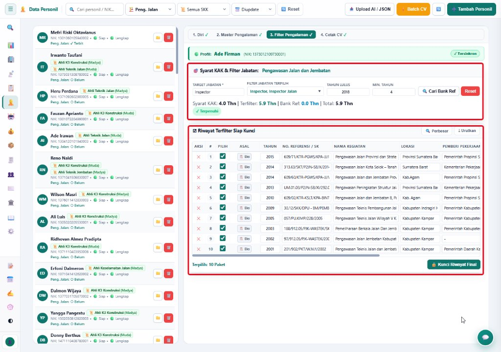
📸 Gambar 7.4: Tampilan Tab 3 (Filter Pengalaman) dengan 2 Kotak Penanda Merah (Panel Syarat KAK Kualifikasi di Atas dan Tabel Riwayat Terfilter Siap Kunci di Bawah).
Berdasarkan Gambar 7.4 di atas, Tab 3 adalah fitur vital penentu kelulusan teknis lelang yang terbagi menjadi 2 Kotak Penanda Merah:
| Parameter Filter KAK | Nilai pada Foto | Ketentuan Evaluasi Pokja LPSE |
|---|---|---|
TARGET JABATAN * |
Inspector |
Posisi jabatan tenaga ahli yang disyaratkan dalam dokumen Kerangka Acuan Kerja (KAK) tender. |
FILTER JABATAN TERPILIH |
Inspector, Inspector Jalan ⌄ |
Memilih sinonim nama jabatan yang relevan agar proyek dengan nama posisi serupa tetap terjaring dalam perhitungan. |
TAHUN LULUS |
2018 |
Aturan Pokja: Pengalaman kerja yang sah dihitung hanyalah pengalaman yang diperoleh **setelah tahun kelulusan ijazah**. Proyek sebelum 2018 otomatis disaring keluar demi mencegah diskualifikasi. |
MIN. TAHUN |
4 Tahun |
Ambang batas minimal tahun pengalaman yang diminta panitia lelang. |
| Rekapitulasi Kalkulasi |
Syarat KAK: 4.0 Thn | Terfilter: 5.9 Thn | Bank Ref: 0.0 Thn | Total: 5.9 Thn
|
Perhitungan matematis real-time membandingkan masa kerja terfilter (5.9 Thn) terhadap syarat minimal KAK (4.0 Thn). |
| Badge Kelulusan | ✓ Terpenuhi | Lencana hijau yang menjamin personil ini **100% memenuhi syarat ambang batas KAK lelang**! |
| Komponen Tabel | Tampilan pada Foto | Penjelasan Aksi |
|---|---|---|
| Tabel Paket Lolos Saring | Daftar 10 paket proyek (tahun 2015 s/d 2001) yang memenuhi syarat jabatan dan durasi. | Hanya paket-paket yang tercentang di sini yang akan dimasukkan ke dalam format tabel lampiran Curriculum Vitae. |
| Counter & Tombol Kunci |
• Lencana: Terpilih: 10 Paket• Tombol: 🔒 Kunci Riwayat Final (Hijau Toska Tua)
|
Penguncian Rekam Jejak (*Data Freezing*): Mengklik tombol kunci akan memfinalisasi daftar pengalaman agar siap dituangkan ke Tab 4 (Cetak CV) tanpa risiko teracak atau terhapus. |
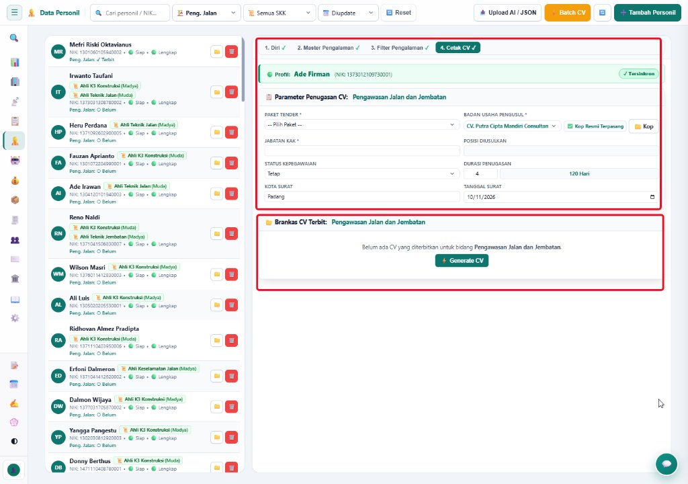
📸 Gambar 7.5: Tampilan Tab 4 (Cetak CV) dengan 2 Kotak Penanda Merah (Parameter Penugasan CV di Atas dan Brankas CV Terbit dengan Tombol Generate CV di Bawah).
Berdasarkan Gambar 7.5 di atas, tahap akhir penerbitan CV terbagi menjadi 2 Kotak Penanda Merah:
| Nama Kolom Parameter | Nilai / Pilihan pada Foto | Muatan Otomatis Dokumen Penawaran |
|---|---|---|
PAKET TENDER * |
-- Pilih Paket -- ⌄ |
Menautkan penerbitan CV ke paket tender yang dituju (mengambil otomatis nama PPK, dinas, dan nomor lelang). |
BADAN USAHA PENGUSUL * |
CV. Putra Cipta Mandiri Consultant ⌄ |
Memilih bendera perusahaan yang mengusulkan tenaga ahli dalam tender (perusahaan tunggal atau salah satu anggota KSO). |
| Kop Surat Resmi | ☑ Kop Resmi Terpasang | Tombol Kop |
Secara otomatis menempelkan kop surat resmi berlogo, alamat, dan legalitas perusahaan pengusul di bagian atas setiap lembar CV. |
STATUS KEPEGAWAIAN |
Tetap ⌄ (atau Tidak Tetap / Kontrak) |
Menentukan klausul pernyataan status kepegawaian personil pada badan usaha pengusul sesuai format LKPP. |
DURASI PENUGASAN |
4 Bulan (120 Hari) |
Durasi waktu keterlibatan personil di lapangan sesuai jadwal pelaksanaan paket lelang. |
KOTA & TANGGAL SURAT |
Padang | 10/11/2026 📅 |
Kota dan tanggal resmi pembubuhan tanda tangan lembar pernyataan kesediaan ditugaskan. |
| Elemen Brankas CV | Tampilan pada Foto | Hasil Output & Standar Format |
|---|---|---|
| Status Brankas | Belum ada CV yang diterbitkan untuk bidang Pengawasan Jalan dan Jembatan. | Menampilkan daftar riwayat berkas CV yang telah diterbitkan sebelumnya lengkap dengan tanggal generate. |
| Tombol Utama | ⚡ Generate CV (Tombol Hijau Toska Tua) |
Penerbitan Dokumen Sekali Klik: Mengklik tombol ini menghasilkan dokumen Curriculum Vitae 5-8 lembar berformat resmi Permen PUPR / INKINDO yang memuat: 1. Kop surat resmi perusahaan pengusul. 2. Pas foto & data identitas diri lengkap. 3. Riwayat pendidikan & sertifikat SKK LPJK. 4. Tabel rekam jejak pengalaman yang telah dikunci di Tab 3. 5. Surat pernyataan kesediaan untuk ditugaskan bermaterai fisik / e-meterai. 6. Kolom tanda tangan tenaga ahli dan direktur perusahaan. |
2. Memeriksa Tab 1: NIK, ijazah Sekolah Ukur Matur, dan SKK Administrasi Jalan Jenjang 4 sudah tersinkron aktif.
3. Membuka Tab 2: Memverifikasi 12 baris riwayat proyek dengan total akumulasi 14.0 Tahun.
4. Membuka Tab 3: Memasang filter KAK (Target Jabatan: Inspector, Min. Pengalaman: 4 Tahun). Sistem memvalidasi personil memiliki masa kerja 5.9 Tahun dengan status ✓ Terpenuhi. Estimator mengklik
🔒 Kunci Riwayat Final.5. Membuka Tab 4: Memilih tender Pengawasan IJD PJN Wilayah I Sumbar, perusahaan pengusul CV. Putra Cipta Mandiri Consultant, durasi 120 hari, lalu mengklik
⚡ Generate CV.6. Dokumen CV 6 halaman berstandar resmi Permen PUPR langsung terbit rapi dan siap diunggah ke portal SPSE tanpa perlu editing manual di Microsoft Word!
Modul 8: AI KAK
Modul AI KAK & Tanggapan memanfaatkan teknologi kecerdasan buatan (Artificial Intelligence Engine) yang dilatih khusus dengan standar teknis Kementerian PUPR (Spesifikasi Umum Bina Marga, Standar Cipta Karya, dan Pedoman SDA). Modul ini membedah dokumen Kerangka Acuan Kerja (KAK) dari PPK dan menyusun draf proposal teknis secara otomatis dalam hitungan menit.
| Bagian Proposal | Uraian Konten yang Disusun AI |
|---|---|
| 1. Pemahaman & Tanggapan KAK | Ulasan kritis terhadap latar belakang proyek, sasaran pekerjaan, ketersediaan data awal, serta saran teknis penyempurnaan ruang lingkup dinas tanpa menambah biaya kontrak. |
| 2. Pendekatan & Metodologi Kerja | Alur kerja pengawasan fisik lapangan tahap demi tahap (tahap persiapan, review desain, pengawasan mutu material, pengendalian waktu/biaya, hingga tahap serah terima BAST/FHO). |
| 3. Rencana Kerja & Kurva S Rencana | Jadwal tahapan pelaksanaan pekerjaan per minggu dan bulan sesuai alokasi waktu yang ditentukan dalam KAK. |
| 4. Komposisi Tim & Uraian Tugas | Matriks pembagian tanggung jawab antara Site Engineer, Inspector, Ahli K3, dan Surveyor lengkap dengan alokasi Orang-Bulan (OB). |
| Nama Tombol | Lokasi | Cara Kerja & Fungsi | Dampak Sistem |
|---|---|---|---|
📤 Upload File PDF KAK |
Bilah Atas Modul | Mengunggah berkas KAK resmi dari Pokja untuk diproses dan diekstraksi oleh mesin teks cerdas. | Input Berkas KAK |
⚡ Analisis KAK dengan AI |
Panel Kontrol | Menjalankan pembedahan KAK untuk mengekstrak syarat personil, lingkup fisik, lokasi, dan target keluaran. | Ekstraksi Parameter Proyek |
📝 Generate Tanggapan KAK |
Tab Tanggapan | Menghasilkan teks bab tanggapan resmi yang memuat apresiasi, catatan teknis, dan saran konstruktif. | Bab Tanggapan Siap Pakai |
🛠️ Generate Metodologi Kerja |
Tab Metodologi | Menyusun bab pendekatan teknis pengawasan/perencanaan sesuai spesifikasi teknis Bina Marga/PUPR terbaru. | Bab Metodologi Siap Pakai |
📋 Salin Teks ke Clipboard |
Setiap Bab | Menyalin teks hasil susunan AI dengan format paragraf rapi langsung ke papan klip untuk ditempel ke dokumen Word. | Penyusunan Cepat Proposal |
Modul 9: Pembuat RAB
Modul Pembuat RAB Konsultansi 9 Tab dirancang sesuai Pedoman Standar Biaya Remunerasi Minimal INKINDO dan SE Menteri PUPR. Modul ini menghitung seluruh komponen biaya jasa konsultansi secara matematis tanpa risiko rumus Excel terhapus atau selisih pembulatan rupiah.
| Tab | Nama Tab | Komponen Biaya yang Dihitung | Standar Acuan |
|---|---|---|---|
| Tab 1 | Rekapitulasi Total | Ringkasan Biaya Langsung Personil (BLP) + Biaya Langsung Non-Personil (BLNP) + PPN 11% + Nilai Penawaran Akhir Dibulatkan. | Formulir Penawaran SPSE |
| Tab 2 | Remunerasi Tenaga Ahli | Perhitungan Billing Rate Tenaga Ahli (Site Engineer, Ahli K3, Ahli Struktur) berdasarkan Provinsi, Tahun Pengalaman, dan Orang-Bulan (OB). | Billing Rate INKINDO |
| Tab 3 | Tenaga Pendukung | Honorarium Inspector, Surveyor Lapangan, Operator CAD/Drafter, Petugas Laboratorium, dan Administrasi Proyek. | Standar Upah Minimum / SE PUPR |
| Tab 4 | Fasilitas & Sewa Kantor | Sewa Basecamp Lapangan, Biaya Listrik/Air, Komputer/Laptop, Printer A3/A4, dan ATK Habis Pakai. | Biaya Operasional Nyata (At Cost) |
| Tab 5 | Sewa Kendaraan | Sewa Mobil Operasional Lapangan (4x4 / MPV), Sepeda Motor Survei, Biaya Bahan Bakar Minyak (BBM), dan Servis Rutin. | Biaya Operasional Nyata (At Cost) |
| Tab 6 | Biaya Pelaporan | Pencetakan dan Penjilidan: Laporan Pendahuluan, Laporan Antara, Laporan Bulanan, Laporan Akhir, dan Album Foto Dokumentasi. | Lump Sum / Harga Satuan |
| Tab 7 | Pertemuan & Sosialisasi | Biaya Rapat Koordinasi, Presentasi Laporan di Dinas, Focus Group Discussion (FGD), dan Konsultasi Publik. | Konsumsi & Ruang Rapat |
| Tab 8 | Analisis Satuan Harga | Uraian rincian harga satuan dasar dan koefisien pengali untuk setiap item biaya non-personil. | Dasar Justifikasi Harga |
| Tab 9 | Format Ekspor Cetak | Tampilan formal dokumen penawaran harga standar tender dan tombol ekspor langsung ke format Microsoft Excel (.xlsx). | Dokumen Siap Cetak |
| Nama Tombol | Lokasi | Cara Kerja & Fungsi | Dampak Sistem |
|---|---|---|---|
+ Tambah Baris Personil |
Tab 2 & Tab 3 | Menambah baris personil baru, memilih posisi, tahun pengalaman, dan durasi Orang-Bulan (OB). | Kalkulasi Billing Rate |
📊 Ekspor ke Excel (.xlsx) |
Pojok Kanan Atas | Mengekspor seluruh 9 tab secara utuh ke dalam 1 file buku kerja Excel dengan format tabel rapi. | File Excel Siap Upload |
🖨️ Cetak Rekap RAB |
Pojok Kanan Atas | Mencetak lembar rekapitulasi penawaran harga resmi Tab 1 lengkap dengan tanda tangan dan kop surat. | Dokumen Penawaran Fisik |
💾 Simpan Draf RAB |
Bawah Panel Tab | Menyimpan seluruh angka perhitungan ke memori lokal dan cloud Supabase. | Penyimpanan Aman |
Modul 10: Data Paket Berjalan
Modul Data Paket Berjalan adalah pusat administrasi bagi seluruh proyek yang telah dimenangkan dan resmi berkontrak dinas. Menyimpan nomor kontrak dinas, nomor Surat Perintah Mulai Kerja (SPMK), masa pelaksanaan (hari kalender), pejabat dinas penandatangan (PPK / PPTK), dan riwayat Addendum Kontrak (perpanjangan waktu atau perubahan nilai biaya).
Jika terjadi perubahan nilai kontrak atau perpanjangan waktu kerja di lapangan, staf wajib menginput Addendum Kontrak di modul ini terlebih dahulu. Saat data addendum tersimpan, sistem secara otomatis meneruskan angka kontrak baru tersebut ke Modul Invoice sehingga pada lembar Rekapitulasi 12 Kolom, kolom "Kontrak Setelah Addendum" otomatis terbarui tanpa salah hitung!
| Nama Tombol | Lokasi | Cara Kerja & Fungsi | Dampak Sistem |
|---|---|---|---|
+ Tambah Kontrak Baru |
Pojok Kanan Atas | Mendaftarkan proyek baru: Nomor Kontrak, Tanggal Kontrak, Nomor SPMK, Tanggal Mulai/Selesai, Nilai Bruto, dan PPK Dinas. | Pendaftaran Kontrak Baru |
📝 Tambah Addendum |
Aksi Baris Paket | Mencatat Addendum Waktu (perpanjangan hari kalender) atau Addendum Biaya (CCO tambah/kurang nilai). | Pembaruan Nilai Kontrak |
🧾 Buat Invoice / MC |
Aksi Baris Paket | Melompat langsung ke Modul 11 (Pembuat Invoice) dengan data proyek yang sudah terkunci otomatis. | Pembuatan Berkas Termin |
📈 Update Kurva S Progres |
Aksi Baris Paket | Memasukkan realisasi persentase progres fisik mingguan untuk memantau deviasi keterlambatan proyek. | Monitoring Kinerja Lapangan |
📦 Tutup / Arsipkan Kontrak |
Aksi Baris Paket | Mengarsipkan proyek yang telah selesai 100% dan meneruskan data pengalaman ke Modul 3 (Portofolio SIKAP). | Arsip Selesai & Tambah KD |
Modul 11: Pembuat Invoice
Modul ini adalah jantung administrasi keuangan proyek konsultan, dirancang khusus untuk memenuhi standar penagihan dinas teknis (Dinas PUPR, Balai Wilayah Sungai, Balai Jalan Nasional).
- Tab 1: Data Umum Proyek & Kontrak: Memuat identitas proyek, jangka waktu bulan, rekening bank penampung, pejabat penandatangan dinas (PPK, PPTK, atau Keduanya), pembulatan nominal, dan Pengaturan Skema Pengembalian Uang Muka.
- Tab 2: Rekapitulasi 12 Kolom Standar PUPR: Menampilkan tabel kumulatif biaya: Kontrak Awal, Addendum, Realisasi s/d Bulan Lalu, Realisasi Bulan Ini, Total s/d Bulan Ini, dan Sisa Kontrak untuk setiap mata pembayaran.
-
Tab 3: Lembar Penagihan MC Resmi 3 Bagian:
Lembar sertifikat penagihan yang dibagi menjadi 3 bagian bersih berjarak rapi:
- 1. PENGEMBALIAN UANG MUKA: Plafon Uang Muka, Potongan s/d Bulan Lalu, Bulan Ini, s/d Bulan Ini, dan Sisa Uang Muka (Wajib Rp 0 di Bulan Terakhir).
- 2. REALISASI PRESTASI PEKERJAAN: Prestasi s/d Bulan Lalu, Bulan Ini, dan s/d Bulan Ini.
- 3. PENARIKAN BULAN INI: Pembayaran Netto yang diterima konsultan beserta teks Terbilang Rupiah resmi.
Sistem mendukung 4 skema pengembalian uang muka untuk mengakomodasi berbagai kondisi keuangan proyek di lapangan:
| Skema | Cara Kerja | Kapan Digunakan |
|---|---|---|
| Otomatis (20%) | Memotong persis 20% dari nilai bruto tagihan setiap bulan. | Kondisi proyek normal sesuai proporsi progres. |
| Tunda / Lewati (0%) | Tidak ada potongan uang muka pada bulan tersebut (potongan Rp 0). | Bila progres lapangan minim atau disetujui PPK untuk tidak dipotong di bulan berjalan. |
| Rapel 2 Bulan (40%) | Memotong dobel (40%) untuk melunasi potongan bulan lalu yang tertunda. | Bulan berikutnya setelah penundaan potongan uang muka. |
| Nominal Kustom (Rp) | Pengguna bebas mengetik nominal potongan rupiah tertentu. | Sesuai Berita Acara Kesepakatan khusus antara konsultan dan PPK dinas. |
Sistem dilengkapi Reconciliation Balancing Plug. Pada invoice terakhir (bulan akhir/progres 100%), seluruh sisa uang muka yang masih tersisa (bahkan sisa pembulatan beberapa rupiah seperti Rp 600) akan otomatis dipotong habis sehingga Sisa Uang Muka di Lembar MC dijamin 100% menjadi Rp 0,00!
• Uang Muka 20%: Rp 36.937.000 diterima di awal.
Alur Penagihan Termin Tiap Bulan:
1. Invoice 1 (Bulan ke-1): Progres 28,44% (Rp 51.971.000). Skema: Potong Otomatis 20% = Rp 10.394.200. Netto dibayar = Rp 41.576.800. Sisa Uang Muka = Rp 26.542.800.
2. Invoice 2 (Bulan ke-2): Konsultan mengajukan penundaan potongan. Di Tab 1 dipilih "Tunda/Lewati (0%)". Potongan bulan ini = Rp 0. Netto dibayar = 100% nilai progres fisik.
3. Invoice 3 (Bulan ke-3): Dilakukan rapel. Di Tab 1 dipilih "Rapel 2 Bulan (40%)". Potongan bulan ini mengembalikan potongan bulan ke-2 dan ke-3 sekaligus.
4. Invoice 4 (Bulan ke-4 / Terakhir): Progres mencapai 100%. Sistem otomatis membersihkan seluruh saldo sisa uang muka. Di Lembar MC Tab 3, baris "- Sisa" otomatis tercetak Rp 0,00 dan status lunas!
Dengan tombol Cetak di pojok kanan atas, sistem langsung menghasilkan berkas penagihan resmi lengkap:
- Surat Permohonan Pembayaran Termin Berkop Resmi.
- Berita Acara Pembayaran (BAP) & Berita Acara Kemajuan Pekerjaan (BAKP).
- Lembar Rekapitulasi 12 Kolom Resmi.
- Lembar Monthly Certificate (MC) 3 Bagian.
- Kwitansi Penagihan Rangkap Bermaterai.
- Rincian Slip Gaji Tenaga Ahli & Daftar Hadir / Absensi Proyek.
Modul 12: Pantau Personil
Modul Pantau Personil & Deteksi Overlap adalah instrumen pengawasan kepatuhan hukum penugasan tenaga ahli. Modul ini memetakan seluruh jadwal kerja Tenaga Ahli pada proyek-proyek yang sedang berjalan ke dalam garis waktu visual (*Gantt Chart Interactive*).
Sesuai regulasi pengadaan pemerintah dan kode etik profesi, Tenaga Ahli yang berstatus Full Time (seperti Site Engineer, Koordinator Tim, Ahli K3) dilarang keras ditugaskan pada dua paket pekerjaan berbeda dalam waktu yang bersamaan. Jika sistem mendeteksi seorang personil terdaftar pada dua kontrak yang rentang tanggalnya bertabrakan, sistem secara otomatis memunculkan Garis Merah Peringatan Overlap dan menaikkan angka peringatan di Kartu Overlap Beranda.
| Nama Tombol | Lokasi | Cara Kerja & Fungsi | Dampak Sistem |
|---|---|---|---|
📅 Filter Rentang Bulan/Tahun |
Atas Gantt Chart | Menggeser tampilan kalender kerja untuk melihat jadwal penugasan di bulan lalu, bulan ini, atau bulan depan. | Navigasi Waktu Gantt Chart |
🔍 Filter Nama Personil |
Bilah Filter | Mencari nama tenaga ahli spesifik untuk melihat daftar seluruh proyek yang pernah dan sedang ditangani. | Inspeksi Riwayat Ahli |
⚠️ Tombol Hanya Overlap |
Bilah Atas | Menyaring dan hanya menampilkan daftar personil yang mengalami bentrok penugasan ganda saja. | Deteksi Cepat Konflik |
🔄 Alihkan Penugasan |
Aksi Baris Personil | Mengganti personil yang bertabrakan dengan tenaga ahli cadangan lain yang berlisensi sama di database. | Penyelesaian Konflik Audit |
Modul 13: Master Surat
Modul Master Surat mengelola seluruh surat-menyurat resmi perusahaan konsultan. Dilengkapi penomoran otomatis terpusat, template dinas baku, dan otomatisasi kop surat resmi.
- Surat Tugas Tenaga Ahli Lapangan: Surat pengantar penugasan resmi dari direksi kepada Site Engineer / Inspector untuk melapor ke direksi dinas / PPK.
- Surat Keterangan Bebas Tugas: Pernyataan resmi bahwa personil telah menyelesaikan seluruh tanggung jawabnya pada proyek lama dan bebas untuk diusulkan pada lelang baru di SPSE.
- Surat Keterangan Pengalaman Kerja (Referensi Kerja): Bukti otentik kinerja personil setelah proyek selesai untuk persyaratan kenaikan jenjang SKK di LPJK.
- Surat Kuasa Direksi & Surat Pernyataan Minat KSO.
| Nama Tombol | Lokasi | Cara Kerja & Fungsi | Dampak Sistem |
|---|---|---|---|
+ Buat Surat Baru |
Pojok Kanan Atas | Membuka formulir pembuatan surat baru: pilih jenis surat, nama penerima, perihal, dan badan usaha penerbit. | Pembuatan Surat Baru |
#️⃣ Generate Nomor Otomatis |
Formulir Surat | Menyusun nomor surat keluar resmi sesuai buku agenda dinas (contoh: 042/PAG-ST/XI/2026). |
Penomoran Anti-Dobel |
🖨️ Cetak Surat Resmi |
Pratinjau Surat | Mencetak dokumen surat lengkap dengan kop resmi, stempel basah transparan, dan tanda tangan direktur. | Surat Resmi Siap Kirim |
Modul 14: Bank Referensi
Modul Bank Referensi mengelola permohonan surat dukungan keuangan dari bank mitra resmi (Bank Nagari, BNI, Bank Mandiri, Bank BRI). Surat referensi bank merupakan syarat mutlak pembuktian kualifikasi keuangan pada tender-tender lelang bernilai besar.
| Nama Tombol | Lokasi | Cara Kerja & Fungsi | Dampak Sistem |
|---|---|---|---|
+ Permohonan Dukungan Bank |
Pojok Kanan Atas | Membuka formulir pengajuan: pilih bank mitra, nomor rekening dinas, nama tender lelang, dan nominal dukungan yang diminta. | Pengajuan Dukungan Bank |
📄 Cetak Surat Permohonan |
Aksi Baris | Mencetak surat permohonan resmi berkop dinas yang ditujukan kepada Pemimpin Cabang Bank bersangkutan. | Surat Permohonan Resmi |
📎 Unggah Scan Asli Bank |
Aksi Baris | Mengunggah scan PDF asli Surat Dukungan Bank yang telah terbit sebagai arsip lampiran dokumen penawaran SPSE. | Arsip Dokumen Tender |
Modul 15: Pengaturan
Modul Pengaturan Sistem adalah pusat kendali tata kelola keamanan sistem yang hanya dapat diakses oleh Direktur Utama atau Administrator Sistem (Superuser). Mengatur hak akses pengguna berdasarkan tugas (*Role-Based Access Control / RBAC*), saklar aktivasi modul, dan pemulihan data.
| Tingkat Peran (Role) | Otoritas & Wewenang Akses | Batasan Keamanan |
|---|---|---|
| Superuser / Direktur | Akses penuh 100% ke seluruh 17 modul, pengaturan rekening dinas, persetujuan hapus data permanen, dan saklar modul. | Tidak memiliki batasan sistem. |
| User Teknik / Estimator | Dapat mengelola RAB 9 Tab, AI KAK, Personil, dan data proyek. | Dilarang mengubah nomor rekening bank perusahaan dan pengaturan hak akses pengguna lain. |
| User Tender / Admin Lelang | Dapat menginput tender, mengunduh CV tenaga ahli, memantau radar SPSE, dan membuat dokumen PQ KSO. | Watermark nama pengguna otomatis tercetak pada dokumen untuk mencegah kebocoran berkas lelang internal. |
| User Keuangan | Mengelola penagihan termin, membuat invoice MC, BAP, kwitansi, dan memantau pengembalian uang muka. | Dilarang mengubah data pokok legalitas akta dan SBU perusahaan. |
| Nama Tombol | Lokasi | Cara Kerja & Fungsi | Dampak Sistem |
|---|---|---|---|
+ Tambah Pengguna Baru |
Tab Pengguna | Mendaftarkan staf baru: Nama, Email, Kata Sandi, dan Tingkatan Peran (Role). | Akses Akun Baru |
🔘 Saklar Modul (On/Off) |
Tab Saklar Modul | Menyalakan atau menonaktifkan tampilan modul tertentu di menu sidebar (misal: menyembunyikan modul AI jika kuota habis). | Kustomisasi Antarmuka |
☁️ Backup Database Cloud |
Tab Pemeliharaan | Mengekspor seluruh tabel database Supabase ke dalam file JSON terenkripsi sebagai cadangan keamanan data. | Cadangan Keamanan Data |
🔄 Reset Cache Lokal |
Tab Pemeliharaan | Membersihkan cache memori browser staf jika terjadi ketidaksesuaian tampilan tanpa merusak database cloud. | Pemecahan Masalah Tampilan |
Modul 16: Sidebar Dock Tools
Sidebar Dock Tools adalah laci alat bantu cepat yang terletak di pojok kiri bawah layar aplikasi. Dock ini dapat dibuka kapan saja tanpa meninggalkan modul yang sedang Anda kerjakan melalui 5 ikon cepat:
| Ikon | Nama Utilitas | Fungsi Utama | Cara Pakai |
|---|---|---|---|
| 📝 | Catatan Sandi SPSE (Brankas Akun) | Menyimpan username, sandi, dan kode OTP akun portal LPSE berbagai kementerian dan pemda secara terenkripsi. | Klik ikon 📝, klik tombol Salin di samping sandi akun SPSE yang dibutuhkan. |
| 📅 | Kalender Hari Kerja & SPMK | Menghitung durasi hari kalender vs hari kerja efektif (otomatis memotong hari libur nasional dan cuti bersama). | Klik ikon 📅, masukkan tanggal SPMK dan durasi bulan, sistem otomatis memunculkan tanggal akhir kontrak. |
| ✍️ | Tanda Tangan Digital | Papan gambar digital untuk membuat tanda tangan direktur dengan latar belakang transparan (.png). | Goreskan tanda tangan di kanvas, klik Simpan Transparan. |
| 💮 | Stempel Perusahaan Digital | Generator stempel lingkaran dinas resmi lengkap dengan nama PT dan bintang pengaman. | Pilih warna stempel (Biru / Merah / Ungu), ketik nama perusahaan, lalu simpan. |
| ◐ | Pengubah Tema (Gelap / Terang) | Mengubah skema warna sistem antara Mode Siang (terang elegan) dan Mode Malam (gelap hemat daya). | Klik ikon ◐ untuk beralih mode warna seketika. |